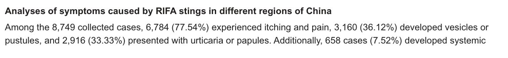

Fire ant poisoning is the acute injury produced when a Solenopsis worker ant anchors itself with its jaws and injects venom through an abdominal stinger, often repeatedly. Two mechanisms run in parallel from the same sting and account for the whole clinical range. The venom is overwhelmingly water-insoluble piperidine alkaloids, which are directly cytotoxic and produce immediate burning pain, a wheal, and the characteristic sterile pustule without any prior sensitization. A much smaller protein fraction carries the allergens Sol i 1 to Sol i 4, which drive IgE-mediated sensitization; on re-exposure a sensitized person can develop urticaria, airway compromise, or anaphylactic shock. The alkaloid branch is near-universal and self-limited; the protein branch is uncommon and is what kills.
Ask a research question about Fire Ant Poisoning. OpenScientist will conduct autonomous deep research using the Disorder Mechanisms Knowledge Base and PubMed literature (typically 10-30 minutes).
Do not include personal health information in your question. Questions and results are cached in your browser's local storage.
Conditions with similar clinical presentations that must be differentiated from Fire Ant Poisoning:
name: Fire Ant Poisoning
creation_date: "2026-10-06T21:33:56Z"
category: Injury
categories:
- Envenomation
- Toxic Exposure Disorder
- Allergic Disorder
synonyms:
- fire ant sting
- fire ant envenomation
- imported fire ant sting reaction
- red imported fire ant envenomation
- fire ant venom allergy
description: >-
Fire ant poisoning is the acute injury produced when a Solenopsis worker ant
anchors itself with its jaws and injects venom through an abdominal stinger,
often repeatedly. Two mechanisms run in parallel from the same sting and
account for the whole clinical range. The venom is overwhelmingly
water-insoluble piperidine alkaloids, which are directly cytotoxic and produce
immediate burning pain, a wheal, and the characteristic sterile pustule without
any prior sensitization. A much smaller protein fraction carries the allergens
Sol i 1 to Sol i 4, which drive IgE-mediated sensitization; on re-exposure a
sensitized person can develop urticaria, airway compromise, or anaphylactic
shock. The alkaloid branch is near-universal and self-limited; the protein
branch is uncommon and is what kills.
disease_term:
preferred_term: fire ant poisoning
term:
id: MONDO:0100341
label: fire ant poisoning
mappings:
mondo_mappings:
- term:
id: MONDO:0100341
label: fire ant poisoning
mapping_predicate: skos:exactMatch
mapping_source: MONDO
mapping_justification: Primary MONDO disease identifier for fire ant poisoning.
classifications:
harrisons_chapter:
- classification_value: POISONING_ENVENOMATION
evidence:
- reference: PMID:37355195
reference_title: "Envenomation From Flood-Related Fire Ant Rafting: A Cautionary Note."
supports: SUPPORT
evidence_source: HUMAN_CLINICAL
snippet: "Imported fire ants aggressively sting humans, leading to a variety of local and systemic effects."
explanation: Identifies the disorder as an envenomation injury with local and systemic effects, supporting the primary Harrison's home in Poisoning, Drug Overdose, and Envenomation.
- classification_value: IMMUNE_RHEUMATOLOGIC
evidence:
- reference: PMID:30258210
reference_title: "The allergic response mediated by fire ant venom proteins."
supports: SUPPORT
quote_role: PRIMARY_RESULT
evidence_source: MODEL_ORGANISM
snippet: "Based on eosinophil recruitment and production of Th2 cytokines, we hereby establish that fire ant proteins per se can lead to an allergic response"
explanation: Supports a secondary immune classification because the life-threatening form of the disease is an IgE-mediated type 2 hypersensitivity reaction.
definitions:
- name: Clinical case definition for fire ant poisoning
definition_type: CASE_DEFINITION
description: >-
Fire ant poisoning is an acute, exposure-dependent sting injury in which
Solenopsis venom is injected into skin, producing immediate local alkaloid
toxicity and, in a sensitized minority, an IgE-mediated systemic allergic
reaction. It is not an inherited disorder and requires no host genotype.
scope: Disease-level framing covering both the direct-toxicity and allergic routes
evidence:
- reference: PMID:30258210
reference_title: "The allergic response mediated by fire ant venom proteins."
supports: SUPPORT
quote_role: BACKGROUND
evidence_source: HUMAN_CLINICAL
snippet: "Immediate effects of the stings are mainly caused by a major (>95%) fraction of toxic alkaloids, but the later allergic responses"
explanation: Supports the two-mechanism definition by separating immediate alkaloid-driven effects from the later protein-driven allergic response.
- reference: PMID:42302087
reference_title: "Analysis of the human health threat caused by the red imported fire ant in mainland China."
supports: SUPPORT
evidence_source: HUMAN_CLINICAL
snippet: "When a RIFA nest is disturbed, the workers rapidly swarm out to attack the intruder using their stings and venom"
explanation: Supports that the necessary cause is contact with and venom injection by a stinging fire ant.
- name: Practical diagnostic definition for fire ant sting reaction
definition_type: DIAGNOSTIC_CRITERIA
description: >-
Diagnosis is clinical, from the exposure history plus the characteristic
lesion evolution. Where a biopsy is taken, a superficial and deep neutrophilic
infiltrate with basophilic collagen degeneration supports the diagnosis even
when the sterile pustule is absent.
scope: Clinical and histopathologic recognition of a fire ant sting reaction
evidence:
- reference: PMID:28873251
reference_title: "Imported fire ant envenomation: A clinicopathologic study of a recognizable form of arthropod assault reaction."
supports: SUPPORT
evidence_source: HUMAN_CLINICAL
snippet: "Skin reactions to the sting of the imported fire ant have characteristic clinicopathological features."
explanation: Supports that the sting reaction is clinically and histopathologically recognizable.
- reference: PMID:28873251
reference_title: "Imported fire ant envenomation: A clinicopathologic study of a recognizable form of arthropod assault reaction."
supports: SUPPORT
evidence_source: HUMAN_CLINICAL
snippet: "the main features were a superficial and deep dermal, perivascular, periadnexal and interstitial infiltrate consisting of neutrophils, with basophilic degeneration of the collagen"
explanation: Supports the specific histopathologic pattern used to support the diagnosis.
parents:
- poisoning
has_subtypes:
- name: Local Sting Reaction
display_name: Local sting reaction (direct alkaloid toxicity)
description: >-
The near-universal form. Piperidine alkaloids injected into skin are directly
cytotoxic, producing immediate burning pain and itching, a wheal, and a
characteristic sterile pustule over roughly 24 hours. No prior sensitization
is required, and large local reactions can persist up to 72 hours.
evidence:
- reference: PMID:42302087
reference_title: "Analysis of the human health threat caused by the red imported fire ant in mainland China."
supports: SUPPORT
evidence_source: HUMAN_CLINICAL
snippet: "The typical local reactions following RIFA stings are itching and burning pain, accompanied by redness and the development of raised wheals and white pustules at the sting site, followed by IgE-mediated urticarial and erythematous reactions"
explanation: Supports the local reaction as the typical presentation, and separates it from the subsequent IgE-mediated component.
- reference: PMID:42302087
reference_title: "Analysis of the human health threat caused by the red imported fire ant in mainland China."
supports: SUPPORT
evidence_source: HUMAN_CLINICAL
snippet: "56% of stung individuals experience noticeable localized reactions, whereas only 0.5-2% exhibit systemic allergy"
explanation: Supports that localized reactions dominate numerically over systemic allergy by roughly two orders of magnitude.
- name: Fire Ant Venom Anaphylaxis
display_name: Fire ant venom anaphylaxis (IgE-mediated systemic reaction)
description: >-
The uncommon but life-threatening form. In a person sensitized to the venom
protein allergens, re-exposure triggers IgE-dependent mast cell activation,
producing generalized urticaria, angioedema, airway compromise, or
circulatory collapse. Systemic mastocytosis is a major risk factor, and in
that group the reaction is frequently misdiagnosed and undertreated.
evidence:
- reference: PMID:40230786
reference_title: "Fire ant-venom anaphylaxis prevalence in the general population and patients with systemic mastocytosis."
supports: SUPPORT
evidence_source: HUMAN_CLINICAL
snippet: "Fire ant and flying Hymenoptera-venom anaphylaxis prevalence in the general population was 0.048% and 0.083%, respectively."
explanation: Supports fire ant venom anaphylaxis as a measurable distinct clinical entity with its own population prevalence.
- reference: PMID:40230786
reference_title: "Fire ant-venom anaphylaxis prevalence in the general population and patients with systemic mastocytosis."
supports: SUPPORT
evidence_source: HUMAN_CLINICAL
snippet: "Fire ant-venom anaphylaxis in systemic mastocytosis is frequently misdiagnosed and not treated with epinephrine."
explanation: Supports that the systemic form is underrecognized and undertreated in the highest-risk host group.
prevalence:
- population: United States Tricare beneficiaries, general population
measure_type: POINT_PREVALENCE
prevalence_class: BAND_1_5_PER_10000
rate_per_100000: 48.0
rate_denominator: POPULATION
subtype: Fire Ant Venom Anaphylaxis
notes: >-
0.048% (4.8 per 10,000) in a population of 2,835,948 beneficiaries enrolled
in direct care, estimated by combining an immunotherapy prescription database
with an ICD-10 registry corrected by a chart-review true-positive rate. More
than 95% of the beneficiary population lived in the United States. This is
the prevalence of the anaphylactic form, not of being stung.
evidence:
- reference: PMID:40230786
reference_title: "Fire ant-venom anaphylaxis prevalence in the general population and patients with systemic mastocytosis."
supports: SUPPORT
evidence_source: HUMAN_CLINICAL
snippet: "Fire ant and flying Hymenoptera-venom anaphylaxis prevalence in the general population was 0.048% and 0.083%, respectively."
explanation: States the measured general-population prevalence of fire ant venom anaphylaxis.
- population: United States, the 14 states colonized by fire ants
measure_type: POINT_PREVALENCE
prevalence_class: BAND_1_5_PER_10000
rate_per_100000: 85.0
rate_denominator: POPULATION
subtype: Fire Ant Venom Anaphylaxis
notes: >-
0.085% (8.5 per 10,000) when restricted to the fourteen states the ants have
colonized, roughly double the all-states figure, which is the expected effect
of restricting the denominator to where exposure actually occurs.
evidence:
- reference: PMID:40230786
reference_title: "Fire ant-venom anaphylaxis prevalence in the general population and patients with systemic mastocytosis."
supports: SUPPORT
evidence_source: HUMAN_CLINICAL
snippet: "Fire ant-venom anaphylaxis prevalence in the 14 colonized states was 0.085%."
explanation: States the measured prevalence restricted to the colonized states.
progression:
- phase: Immediate local reaction
notes: >-
Burning pain, itching, erythema and a wheal appear immediately on stinging,
driven by the alkaloid fraction rather than by any immune memory.
evidence:
- reference: PMID:42302087
reference_title: "Analysis of the human health threat caused by the red imported fire ant in mainland China."
supports: SUPPORT
evidence_source: HUMAN_CLINICAL
snippet: "The typical local reactions following RIFA stings are itching and burning pain, accompanied by redness and the development of raised wheals and white pustules at the sting site"
explanation: Supports the immediate local phase of pain, itching, erythema and wheal formation.
- phase: Pustule formation over 48 hours
notes: >-
The lesion evolves through a distinctive histopathologic sequence, with a
sterile subepidermal pustule forming over a wedge-shaped area of degenerated
dermal collagen.
evidence:
- reference: PMID:28873251
reference_title: "Imported fire ant envenomation: A clinicopathologic study of a recognizable form of arthropod assault reaction."
supports: SUPPORT
evidence_source: HUMAN_CLINICAL
snippet: "The typical lesion follows a very distinctive clinical and histopathologic evolution over 48 hours, with the formation of a subepidermal pustule overlying a wedge-shaped area of dermal collagen basophilic degeneration with scattered neutrophils."
explanation: Supports a defined 48-hour evolution to the characteristic subepidermal pustule, documented by prospective biopsy.
- phase: Sensitization between exposures
notes: >-
Between a first and a later sting, venom proteins drive antigen presentation
and class switching to venom-specific IgE. In the mouse model, challenge
fourteen days after sensitization produced the allergic response; the
corresponding interval in an individual human is not fixed.
evidence:
- reference: PMID:30258210
reference_title: "The allergic response mediated by fire ant venom proteins."
supports: SUPPORT
quote_role: PRIMARY_RESULT
evidence_source: MODEL_ORGANISM
snippet: "Following sensitization and a second exposure, a marked footpad swelling was observed."
explanation: Supports a latent sensitization interval between exposures, after which a second exposure produces an amplified response.
- phase: Systemic reaction on re-exposure
notes: >-
In a sensitized person a subsequent sting can produce a systemic reaction
within minutes, and repeated exposure can make successive reactions more
severe.
evidence:
- reference: PMID:42302087
reference_title: "Analysis of the human health threat caused by the red imported fire ant in mainland China."
supports: SUPPORT
evidence_source: HUMAN_CLINICAL
snippet: "Repeated exposure to the allergen can lead to progressively more severe allergic reactions"
explanation: Supports escalation of reaction severity across repeated exposures rather than a fixed per-sting risk.
- phase: Fatal outcome in a small minority
notes: >-
Death was recorded in 3 of 8,749 assembled cases (0.03%), and the reporting
source attributes many fatalities to delayed or inadequate treatment rather
than to the sting dose itself. That is the same pattern as the undertreatment
of anaphylaxis with epinephrine documented in the mastocytosis cohort, which
is why recognition rather than severity is the modifiable step.
evidence:
- reference: PMID:42302087
reference_title: "Analysis of the human health threat caused by the red imported fire ant in mainland China."
supports: SUPPORT
evidence_source: HUMAN_CLINICAL
snippet: "66 (0.75%) temporarily lost their voice (speech impediment), and 3 cases (0.03%) resulted in death"
explanation: Quantifies the fatal outcome within the assembled case series.
- reference: PMID:42302087
reference_title: "Analysis of the human health threat caused by the red imported fire ant in mainland China."
supports: SUPPORT
evidence_source: HUMAN_CLINICAL
snippet: "Previous studies have shown that many fatalities caused by RIFA stings result from delayed or inadequate treatment, leading to anaphylactic shock or secondary complications"
explanation: Supports delayed or inadequate treatment, rather than the envenomation alone, as the route to most reported deaths.
pathophysiology:
- name: Fire ant sting and venom deposition in skin
description: >-
A worker ant anchors with its mandibles and injects venom through an
abdominal stinger, usually several times. The injected volume is small, with
only 10 to 100 ng of protein per sting, but the venom is overwhelmingly
alkaloid by mass and both fractions are delivered together into the
superficial skin.
biological_scale: ORGANISM
locations:
- preferred_term: skin of body
term:
id: UBERON:0002097
label: skin of body
biological_processes:
- preferred_term: response to toxic substance
modifier: INCREASED
term:
id: GO:0009636
label: response to toxic substance
evidence:
- reference: PMID:42302087
reference_title: "Analysis of the human health threat caused by the red imported fire ant in mainland China."
supports: SUPPORT
evidence_source: HUMAN_CLINICAL
snippet: "When a RIFA nest is disturbed, the workers rapidly swarm out to attack the intruder using their stings and venom"
explanation: Directly supports venom injection by swarming workers as the initiating event.
- reference: PMID:37624246
reference_title: "Chemistry and Functions of Imported Fire Ant Venom."
supports: SUPPORT
quote_role: REVIEW_SYNTHESIS
evidence_source: OTHER
snippet: "fire ant venoms are characterized by a high proportion of water-insoluble alkaloids and a small number of water-soluble proteins"
explanation: Supports that the deposited venom is predominantly alkaloid with a minor protein fraction, which is what gives the disease its two branches.
downstream:
- target: Piperidine alkaloid cytotoxic injury to skin
causal_link_type: DIRECT
description: The dominant alkaloid fraction injures cells at the sting site directly.
evidence:
- reference: PMID:30258210
reference_title: "The allergic response mediated by fire ant venom proteins."
supports: SUPPORT
quote_role: BACKGROUND
evidence_source: HUMAN_CLINICAL
snippet: "Immediate effects of the stings are mainly caused by a major (>95%) fraction of toxic alkaloids, but the later allergic responses"
explanation: Supports that the immediate consequence of the sting is attributable to the alkaloid fraction.
- target: Venom protein antigen presentation and type 2 sensitization
causal_link_type: DIRECT
description: In parallel, the minor protein fraction is taken up and processed by antigen-presenting cells.
evidence:
- reference: PMID:30258210
reference_title: "The allergic response mediated by fire ant venom proteins."
supports: SUPPORT
evidence_source: IN_VITRO
snippet: "This demonstrates that the venom proteins can directly activate dendritic cells to promote antigen presentation"
explanation: Supports a second, parallel branch in which the venom proteins initiate antigen presentation.
- name: Piperidine alkaloid cytotoxic injury to skin
description: >-
The piperidine alkaloids, named solenopsins, make up over 95% of the venom
and are directly cytotoxic. In vitro they killed dendritic cells at 10
micrograms per millilitre, which is why the authors concluded the alkaloids
are not the immunogenic component. This cytotoxicity is the basis of the
immediate burning pain and local injury, and it requires no immune memory.
biological_scale: CELLULAR
locations:
- preferred_term: skin epidermis
term:
id: UBERON:0001003
label: skin epidermis
cell_types:
- preferred_term: keratinocyte
term:
id: CL:0000312
label: keratinocyte
chemical_entities:
- preferred_term: solenopsin A
term:
id: CHEBI:80722
label: (-)-Solenopsin A
biological_processes:
- preferred_term: inflammatory response
modifier: INCREASED
term:
id: GO:0006954
label: inflammatory response
evidence:
- reference: PMID:30258210
reference_title: "The allergic response mediated by fire ant venom proteins."
supports: SUPPORT
evidence_source: IN_VITRO
snippet: "The venom alkaloids proved extremely cytotoxic even at 10"
explanation: Directly supports marked cytotoxicity of the venom alkaloid fraction in cell culture.
- reference: PMID:37624246
reference_title: "Chemistry and Functions of Imported Fire Ant Venom."
supports: SUPPORT
quote_role: REVIEW_SYNTHESIS
evidence_source: OTHER
snippet: "These piperidine alkaloids were commonly named solenopsins"
explanation: Establishes the identity of the alkaloid class responsible for the direct toxicity.
notes: >-
The cytotoxicity figure is from cultured murine bone-marrow-derived dendritic
cells, not from human skin. The precise molecular target in human sting
lesions is not established, and no Wnt, MAPK or mTOR signalling lesion is
asserted: isolated-solenopsin data from cancer-cell models do not transfer
to clinical envenomation.
downstream:
- target: Neutrophilic dermal infiltration and collagen degeneration
causal_link_type: DIRECT
description: Local cytotoxic injury recruits a dense neutrophilic infiltrate and degenerates dermal collagen.
evidence:
- reference: PMID:28873251
reference_title: "Imported fire ant envenomation: A clinicopathologic study of a recognizable form of arthropod assault reaction."
supports: SUPPORT
evidence_source: HUMAN_CLINICAL
snippet: "the main features were a superficial and deep dermal, perivascular, periadnexal and interstitial infiltrate consisting of neutrophils, with basophilic degeneration of the collagen"
explanation: Human biopsy evidence for the neutrophilic infiltrate and collagen degeneration that follow the local injury.
- target: Pruritus
causal_link_type: DIRECT
description: Local alkaloid injury produces the immediate itching that is the most frequently reported symptom.
evidence:
- reference: PMID:42302087
reference_title: "Analysis of the human health threat caused by the red imported fire ant in mainland China."
supports: SUPPORT
evidence_source: HUMAN_CLINICAL
snippet: "The typical local reactions following RIFA stings are itching and burning pain, accompanied by redness and the development of raised wheals and white pustules at the sting site"
explanation: Supports itching as a direct and immediate local consequence of the sting.
- target: Pain
causal_link_type: DIRECT
description: The same local alkaloid injury produces immediate burning pain.
evidence:
- reference: PMID:42302087
reference_title: "Analysis of the human health threat caused by the red imported fire ant in mainland China."
supports: SUPPORT
evidence_source: HUMAN_CLINICAL
snippet: "The typical local reactions following RIFA stings are itching and burning pain"
explanation: Supports burning pain as a direct and immediate local consequence of the sting.
- target: Erythema
causal_link_type: DIRECT
description: Local injury and the accompanying inflammatory response produce redness at the sting site.
evidence:
- reference: PMID:42302087
reference_title: "Analysis of the human health threat caused by the red imported fire ant in mainland China."
supports: SUPPORT
evidence_source: HUMAN_CLINICAL
snippet: "accompanied by redness and the development of raised wheals and white pustules at the sting site"
explanation: Supports erythema at the sting site as part of the immediate local reaction.
- name: Neutrophilic dermal infiltration and collagen degeneration
description: >-
Biopsies taken in a clinical setting show a superficial and deep dermal
infiltrate of neutrophils in perivascular, periadnexal and interstitial
distribution, accompanied by basophilic degeneration of dermal collagen. This
pattern is itself diagnostically useful even when the pustule is absent.
biological_scale: TISSUE
locations:
- preferred_term: dermis
term:
id: UBERON:0002067
label: dermis
cell_types:
- preferred_term: neutrophil
term:
id: CL:0000775
label: neutrophil
biological_processes:
- preferred_term: inflammatory response
modifier: INCREASED
term:
id: GO:0006954
label: inflammatory response
evidence:
- reference: PMID:28873251
reference_title: "Imported fire ant envenomation: A clinicopathologic study of a recognizable form of arthropod assault reaction."
supports: SUPPORT
evidence_source: HUMAN_CLINICAL
snippet: "the main features were a superficial and deep dermal, perivascular, periadnexal and interstitial infiltrate consisting of neutrophils, with basophilic degeneration of the collagen"
explanation: Directly supports the neutrophilic infiltrate and collagen degeneration as the tissue-level lesion.
downstream:
- target: Sterile subepidermal pustule formation
causal_link_type: DIRECT
description: The neutrophilic infiltrate organizes into a subepidermal pustule over about 48 hours.
evidence:
- reference: PMID:28873251
reference_title: "Imported fire ant envenomation: A clinicopathologic study of a recognizable form of arthropod assault reaction."
supports: SUPPORT
evidence_source: HUMAN_CLINICAL
snippet: "The typical lesion follows a very distinctive clinical and histopathologic evolution over 48 hours, with the formation of a subepidermal pustule overlying a wedge-shaped area of dermal collagen basophilic degeneration with scattered neutrophils."
explanation: Supports the step from neutrophilic infiltration and collagen degeneration to a subepidermal pustule, with the stated time course.
- name: Sterile subepidermal pustule formation
description: >-
The characteristic lesion is a sterile subepidermal pustule sitting over a
wedge-shaped zone of degenerated dermal collagen. It was present in half of
the retrospectively reviewed biopsies, so its absence does not exclude the
diagnosis.
biological_scale: TISSUE
locations:
- preferred_term: skin epidermis
term:
id: UBERON:0001003
label: skin epidermis
cell_types:
- preferred_term: neutrophil
term:
id: CL:0000775
label: neutrophil
evidence:
- reference: PMID:28873251
reference_title: "Imported fire ant envenomation: A clinicopathologic study of a recognizable form of arthropod assault reaction."
supports: SUPPORT
evidence_source: HUMAN_CLINICAL
snippet: "A subepidermal pustule was noted in half of the cases."
explanation: Supports the pustule as a characteristic but not invariable finding on biopsy.
downstream:
- target: Pustule
causal_link_type: DIRECT
description: The lesion presents clinically as the white pustule characteristic of a fire ant sting.
evidence:
- reference: PMID:42302087
reference_title: "Analysis of the human health threat caused by the red imported fire ant in mainland China."
supports: SUPPORT
evidence_source: HUMAN_CLINICAL
snippet: "the development of raised wheals and white pustules at the sting site"
explanation: Supports the clinically visible white pustule as the manifestation of the histologic lesion.
- target: Skin vesicle
causal_link_type: DIRECT
description: Earlier or less developed lesions are recorded clinically as vesicles.
evidence:
- reference: PMID:42302087
reference_title: "Analysis of the human health threat caused by the red imported fire ant in mainland China."
supports: SUPPORT
evidence_source: HUMAN_CLINICAL
snippet: "3,160 (36.12%) developed vesicles or pustules"
explanation: Supports vesicles being recorded alongside pustules as the same reported lesion category.
- name: Venom protein antigen presentation and type 2 sensitization
description: >-
The minor water-soluble protein fraction carries the allergens Sol i 1 to
Sol i 4. These proteins directly activate dendritic cells, upregulating MHC
class II and the costimulatory molecule CD86, which licenses antigen
presentation to naive T cells and a type 2 helper response with IL-4
production. The venom proteins did this without any added adjuvant, and
themselves acted as an adjuvant for an unrelated antigen.
biological_scale: CELLULAR
cell_types:
- preferred_term: dendritic cell
term:
id: CL:0000451
label: dendritic cell
- preferred_term: T-helper 2 cell
term:
id: CL:0000546
label: T-helper 2 cell
biological_processes:
- preferred_term: antigen processing and presentation of exogenous peptide antigen via MHC class II
modifier: INCREASED
term:
id: GO:0019886
label: antigen processing and presentation of exogenous peptide antigen via MHC class II
- preferred_term: type 2 immune response
modifier: INCREASED
term:
id: GO:0042092
label: type 2 immune response
evidence:
- reference: PMID:30258210
reference_title: "The allergic response mediated by fire ant venom proteins."
supports: SUPPORT
quote_role: PRIMARY_RESULT
evidence_source: IN_VITRO
snippet: "the venom proteins elicited an activation response, as shown by the upregulation of MHCII and CD86"
explanation: Directly supports dendritic cell activation by venom proteins, measured as MHC class II and CD86 upregulation.
- reference: PMID:30258210
reference_title: "The allergic response mediated by fire ant venom proteins."
supports: SUPPORT
quote_role: PRIMARY_RESULT
evidence_source: MODEL_ORGANISM
snippet: "Based on eosinophil recruitment and production of Th2 cytokines, we hereby establish that fire ant proteins per se can lead to an allergic response"
explanation: Supports that the venom proteins alone are sufficient to drive a type 2 allergic response.
- reference: PMID:37624246
reference_title: "Chemistry and Functions of Imported Fire Ant Venom."
supports: SUPPORT
quote_role: REVIEW_SYNTHESIS
evidence_source: OTHER
snippet: "four worker allergens have been isolated and characterized: Sol i 1, Sol i 2, Sol i 3, and Sol i 4"
explanation: Establishes the identity of the four characterized venom protein allergens driving sensitization.
downstream:
- target: Venom-specific IgE class switching
causal_link_type: DIRECT
description: The type 2 response drives B cell class switching to venom-specific IgE.
evidence:
- reference: PMID:30258210
reference_title: "The allergic response mediated by fire ant venom proteins."
supports: SUPPORT
directness: INDIRECT
evidence_source: MODEL_ORGANISM
snippet: "activated B cells mature into IgE-secretory plasma cells, and the secreted allergen-specific IgE bind to peripheral mast-cells"
explanation: >-
Names the IgE class-switching and mast-cell-binding step this edge
asserts. Graded INDIRECT because the sentence is from the figure legend
describing the authors' hypothesized scheme for the fire ant response
rather than a measurement they report; the study did not quantify
venom-specific IgE.
- reference: PMID:30258210
reference_title: "The allergic response mediated by fire ant venom proteins."
supports: SUPPORT
quote_role: BACKGROUND
directness: INDIRECT
evidence_source: OTHER
snippet: "Once activated, Th2 lymphocytes will undergo clonal expansion leading to lymph node hyperplasia and production of IL-4"
explanation: >-
Background statement of general type 2 immunology, carried as context for
the IL-4-driven response preceding class switching. Graded INDIRECT
because the sentence does not mention IgE, so it supports the edge only
through the established link from IL-4 to class switching.
- name: Venom-specific IgE class switching
description: >-
Activated B cells undergo clonal expansion and mature into IgE-secreting
plasma cells producing antibody specific for the venom allergens. The
sensitization rate to fire ant venom exceeds 90% in colonized regions, far
above sensitization to other stinging Hymenoptera, so this state is common
while anaphylaxis remains uncommon.
biological_scale: MOLECULAR
cell_types:
- preferred_term: B cell
term:
id: CL:0000236
label: B cell
biological_processes:
- preferred_term: immunoglobulin production
modifier: INCREASED
term:
id: GO:0002377
label: immunoglobulin production
evidence:
- reference: PMID:40230786
reference_title: "Fire ant-venom anaphylaxis prevalence in the general population and patients with systemic mastocytosis."
supports: SUPPORT
evidence_source: HUMAN_CLINICAL
snippet: "the sensitization rate to FA venom can be >90% in colonized regions and is higher than sensitization to other stinging Hymenoptera"
explanation: Supports that venom sensitization is near-universal in colonized regions, which is what makes the gap between sensitization and clinical anaphylaxis important.
notes: >-
Sensitization and disease are not the same thing here, and the gap is large:
over 90% sensitization in colonized regions against a measured anaphylaxis
prevalence of 0.085% in those states. A positive venom IgE test therefore does
not identify who will react.
downstream:
- target: Mast cell arming by venom-specific IgE
causal_link_type: DIRECT
description: Secreted allergen-specific IgE binds the high-affinity receptor on peripheral mast cells.
evidence:
- reference: PMID:30258210
reference_title: "The allergic response mediated by fire ant venom proteins."
supports: SUPPORT
directness: INDIRECT
evidence_source: MODEL_ORGANISM
snippet: "activated B cells mature into IgE-secretory plasma cells, and the secreted allergen-specific IgE bind to peripheral mast-cells"
explanation: >-
States the binding of secreted allergen-specific IgE to peripheral mast
cells. Graded INDIRECT because the sentence is the authors' hypothesized
scheme in a figure legend rather than a measurement they report.
- name: Mast cell arming by venom-specific IgE
description: >-
Venom-specific IgE occupies the high-affinity receptor on peripheral mast
cells. This is the state that converts a subsequent ordinary sting into a
potentially fatal event, and it is what whole-body extract immunotherapy
acts on.
biological_scale: CELLULAR
cell_types:
- preferred_term: mast cell
term:
id: CL:0000097
label: mast cell
evidence:
- reference: PMID:30258210
reference_title: "The allergic response mediated by fire ant venom proteins."
supports: SUPPORT
directness: INDIRECT
evidence_source: MODEL_ORGANISM
snippet: "activated B cells mature into IgE-secretory plasma cells, and the secreted allergen-specific IgE bind to peripheral mast-cells"
explanation: >-
States that secreted allergen-specific IgE binds peripheral mast cells,
which is this node. Graded INDIRECT because it is the authors' hypothesized
scheme rather than a reported measurement.
downstream:
- target: IgE-mediated mast cell activation on re-exposure
causal_link_type: DIRECT
description: Armed mast cells are primed to degranulate when venom antigen is encountered again.
evidence:
- reference: PMID:30258210
reference_title: "The allergic response mediated by fire ant venom proteins."
supports: SUPPORT
quote_role: BACKGROUND
evidence_source: HUMAN_CLINICAL
snippet: "A second exposure to venom antigens triggers a stereotypical allergic response marked by acute vascular permeability and later eosinophil recruitment at the site of the sting."
explanation: Supports the step from a sensitized state to an amplified stereotyped response on second exposure.
- name: IgE-mediated mast cell activation on re-exposure
description: >-
On a later sting, venom antigen cross-links IgE on armed mast cells and
basophils, releasing mediators that produce acute vascular permeability,
generalized urticaria and, when the reaction is systemic, airway obstruction
or circulatory collapse. Eosinophil recruitment driven by eotaxin follows at
the sting site.
biological_scale: CELLULAR
cell_types:
- preferred_term: mast cell
term:
id: CL:0000097
label: mast cell
- preferred_term: eosinophil
term:
id: CL:0000771
label: eosinophil
biological_processes:
- preferred_term: mast cell activation
modifier: INCREASED
term:
id: GO:0045576
label: mast cell activation
- preferred_term: eosinophil chemotaxis
modifier: INCREASED
term:
id: GO:0048245
label: eosinophil chemotaxis
evidence:
- reference: PMID:30258210
reference_title: "The allergic response mediated by fire ant venom proteins."
supports: SUPPORT
quote_role: PRIMARY_RESULT
evidence_source: MODEL_ORGANISM
snippet: "venom proteins per se can actively promote sensitization-dependent eosinophil recruitment to the peritoneal cavity after a second exposure through the production of eosinophilotactic signals such as eotaxin"
explanation: Directly supports sensitization-dependent eosinophil recruitment through eotaxin on second exposure.
- reference: PMID:30258210
reference_title: "The allergic response mediated by fire ant venom proteins."
supports: SUPPORT
quote_role: BACKGROUND
evidence_source: HUMAN_CLINICAL
snippet: "This condition can be life threatening when the allergic reaction is triggered systemically progressing to anaphylactic shock"
explanation: Supports progression of the systemic form of this reaction to anaphylactic shock.
notes: >-
The mediator-release step itself was explicitly not measured in the mouse
study, whose authors mark it as part of their hypothesized scheme. The human
evidence for this node is the observed clinical syndrome and its response to
epinephrine and to venom immunotherapy, not a direct measurement of mast cell
degranulation after a fire ant sting.
downstream:
- target: Urticaria
causal_link_type: DIRECT
description: Mediator release produces generalized itching, rash and wheals beyond the sting site.
evidence:
- reference: PMID:42302087
reference_title: "Analysis of the human health threat caused by the red imported fire ant in mainland China."
supports: SUPPORT
evidence_source: HUMAN_CLINICAL
snippet: "Systemic allergic symptoms manifest as generalized itching, rashes, flushing, and swelling of the head, neck, and face, which may progress to the limbs and trunk, potentially leading to laryngeal edema, asthma, respiratory distress, or even anaphylactic shock"
explanation: Supports generalized cutaneous manifestations as the consequence of a systemic allergic reaction.
- target: Venom-induced anaphylaxis
causal_link_type: DIRECT
description: A systemic mediator release presents as venom-induced anaphylaxis.
evidence:
- reference: PMID:30258210
reference_title: "The allergic response mediated by fire ant venom proteins."
supports: SUPPORT
quote_role: BACKGROUND
evidence_source: HUMAN_CLINICAL
snippet: "This condition can be life threatening when the allergic reaction is triggered systemically progressing to anaphylactic shock"
explanation: Supports the step from a systemically triggered allergic reaction to life-threatening anaphylaxis.
- target: Laryngeal edema
causal_link_type: DIRECT
description: Mediator-driven swelling of the upper airway threatens obstruction.
evidence:
- reference: PMID:42302087
reference_title: "Analysis of the human health threat caused by the red imported fire ant in mainland China."
supports: SUPPORT
evidence_source: HUMAN_CLINICAL
snippet: "potentially leading to laryngeal edema, asthma, respiratory distress, or even anaphylactic shock"
explanation: Supports laryngeal edema as a documented consequence of the systemic reaction.
- target: Anaphylactic shock
causal_link_type: DIRECT
description: Severe systemic mediator release causes circulatory collapse.
evidence:
- reference: PMID:42302087
reference_title: "Analysis of the human health threat caused by the red imported fire ant in mainland China."
supports: SUPPORT
evidence_source: HUMAN_CLINICAL
snippet: "potentially leading to laryngeal edema, asthma, respiratory distress, or even anaphylactic shock"
explanation: Supports anaphylactic shock as the most severe consequence of the systemic reaction.
phenotypes:
- name: Pruritus
category: Dermatologic
subtype: Local Sting Reaction
frequency: FREQUENT
description: >-
Itching, recorded together with pain, was the most frequently reported
manifestation, in 77.54% of 8,749 assembled cases. It is immediate and does
not require prior sensitization.
phenotype_term:
preferred_term: Pruritus
term:
id: HP:0000989
label: Pruritus
evidence:
- reference: PMID:42302087
reference_title: "Analysis of the human health threat caused by the red imported fire ant in mainland China."
supports: SUPPORT
evidence_source: HUMAN_CLINICAL
snippet: "Among the 8,749 collected cases, 6,784 (77.54%) experienced itching and pain, 3,160 (36.12%) developed vesicles or pustules, and 2,916 (33.33%) presented with urticaria or papules."
explanation: "Quantitative basis for the FREQUENT band: itching and pain were recorded in 77.54% of cases, within the 30-79% range."
- name: Pain
category: Dermatologic
subtype: Local Sting Reaction
frequency: FREQUENT
description: >-
Immediate burning pain at the sting site, recorded together with itching in
77.54% of assembled cases.
phenotype_term:
preferred_term: Pain
term:
id: HP:0012531
label: Pain
evidence:
- reference: PMID:42302087
reference_title: "Analysis of the human health threat caused by the red imported fire ant in mainland China."
supports: SUPPORT
evidence_source: HUMAN_CLINICAL
snippet: "The typical local reactions following RIFA stings are itching and burning pain"
explanation: Supports burning pain as a typical immediate local reaction.
- reference: PMID:42302087
reference_title: "Analysis of the human health threat caused by the red imported fire ant in mainland China."
supports: SUPPORT
evidence_source: HUMAN_CLINICAL
snippet: "Among the 8,749 collected cases, 6,784 (77.54%) experienced itching and pain"
explanation: "Quantitative basis for the FREQUENT band: the combined itching-and-pain category was recorded in 77.54% of cases."
- name: Pustule
category: Dermatologic
subtype: Local Sting Reaction
frequency: FREQUENT
description: >-
The characteristic sterile white pustule develops at the sting site over
roughly a day. Vesicles or pustules were recorded in 36.12% of assembled
cases.
phenotype_term:
preferred_term: Pustule
term:
id: HP:0200039
label: Pustule
evidence:
- reference: PMID:42302087
reference_title: "Analysis of the human health threat caused by the red imported fire ant in mainland China."
supports: SUPPORT
evidence_source: HUMAN_CLINICAL
snippet: "3,160 (36.12%) developed vesicles or pustules"
explanation: "Quantitative basis for the FREQUENT band: vesicles or pustules were recorded in 36.12% of cases, within the 30-79% range."
- reference: PMID:28873251
reference_title: "Imported fire ant envenomation: A clinicopathologic study of a recognizable form of arthropod assault reaction."
supports: SUPPORT
evidence_source: HUMAN_CLINICAL
snippet: "A subepidermal pustule was noted in half of the cases."
explanation: Independent histopathologic support for the pustule, in a biopsied series rather than a symptom compilation.
- name: Skin vesicle
category: Dermatologic
subtype: Local Sting Reaction
description: >-
Vesicles are recorded in the same reported category as pustules and likely
represent an earlier or less developed stage of the same lesion. The source
does not separate the two, so no independent frequency is given.
phenotype_term:
preferred_term: Skin vesicle
term:
id: HP:0200037
label: Skin vesicle
evidence:
- reference: PMID:42302087
reference_title: "Analysis of the human health threat caused by the red imported fire ant in mainland China."
supports: SUPPORT
evidence_source: HUMAN_CLINICAL
snippet: "3,160 (36.12%) developed vesicles or pustules"
explanation: Supports vesicles as a reported lesion, recorded in a combined category with pustules.
- name: Erythema
category: Dermatologic
subtype: Local Sting Reaction
description: >-
Redness at the sting site accompanies the immediate local reaction.
phenotype_term:
preferred_term: Erythema
term:
id: HP:0010783
label: Erythema
evidence:
- reference: PMID:42302087
reference_title: "Analysis of the human health threat caused by the red imported fire ant in mainland China."
supports: SUPPORT
evidence_source: HUMAN_CLINICAL
snippet: "accompanied by redness and the development of raised wheals and white pustules at the sting site"
explanation: Supports erythema at the sting site as part of the typical local reaction.
- name: Urticaria
category: Dermatologic
frequency: FREQUENT
description: >-
Urticaria or papules were recorded in 33.33% of assembled cases. Local
urticarial and erythematous change follows the initial lesion, and
generalized urticaria beyond the sting site indicates a systemic allergic
reaction.
phenotype_term:
preferred_term: Urticaria
term:
id: HP:0001025
label: Urticaria
evidence:
- reference: PMID:42302087
reference_title: "Analysis of the human health threat caused by the red imported fire ant in mainland China."
supports: SUPPORT
evidence_source: HUMAN_CLINICAL
snippet: "2,916 (33.33%) presented with urticaria or papules"
explanation: "Quantitative basis for the FREQUENT band: urticaria or papules were recorded in 33.33% of cases, within the 30-79% range."
- reference: PMID:42302087
reference_title: "Analysis of the human health threat caused by the red imported fire ant in mainland China."
supports: SUPPORT
evidence_source: HUMAN_CLINICAL
snippet: "followed by IgE-mediated urticarial and erythematous reactions"
explanation: Supports the urticarial component as IgE-mediated rather than part of the direct alkaloid injury.
notes: >-
Deliberately not scoped to a subtype. The reported category spans local
urticarial change after an ordinary sting and generalized urticaria as part of
a systemic reaction, and the source does not separate them.
- name: Papule
category: Dermatologic
description: >-
Papules are recorded in the same category as urticaria and are not separately
quantified.
phenotype_term:
preferred_term: Papule
term:
id: HP:0200034
label: Papule
evidence:
- reference: PMID:42302087
reference_title: "Analysis of the human health threat caused by the red imported fire ant in mainland China."
supports: SUPPORT
evidence_source: HUMAN_CLINICAL
snippet: "2,916 (33.33%) presented with urticaria or papules"
explanation: Supports papules as a reported lesion, recorded in a combined category with urticaria.
- name: Venom-induced anaphylaxis
category: Immunologic
subtype: Fire Ant Venom Anaphylaxis
description: >-
An IgE-mediated systemic reaction to fire ant venom, the form of this disease
that causes death. Reported rates differ by roughly an order of magnitude
between sources, so no frequency band is assigned; see the entry notes.
phenotype_term:
preferred_term: Venom-induced anaphylaxis
term:
id: HP:0500096
label: Venom-induced anaphylaxis
evidence:
- reference: PMID:40230786
reference_title: "Fire ant-venom anaphylaxis prevalence in the general population and patients with systemic mastocytosis."
supports: SUPPORT
evidence_source: HUMAN_CLINICAL
snippet: "Fire ant and flying Hymenoptera-venom anaphylaxis prevalence in the general population was 0.048% and 0.083%, respectively."
explanation: Supports fire ant venom anaphylaxis as a measured clinical entity with a population prevalence.
- reference: PMID:37624246
reference_title: "Chemistry and Functions of Imported Fire Ant Venom."
supports: SUPPORT
quote_role: REVIEW_SYNTHESIS
evidence_source: OTHER
snippet: "Systemic allergic reactions to fire ant stings are observed in approximately 2% of victims"
explanation: Independent estimate of the proportion of stung people who react systemically, quoted here because it differs from the other reported figures.
- name: Anaphylactic shock
category: Cardiovascular
subtype: Fire Ant Venom Anaphylaxis
frequency: VERY_RARE
description: >-
Circulatory collapse was recorded in 1.17% of assembled cases. It is nested
within the systemic-allergy category rather than being independent of it.
phenotype_term:
preferred_term: Anaphylactic shock
term:
id: HP:0100845
label: Anaphylactic shock
evidence:
- reference: PMID:42302087
reference_title: "Analysis of the human health threat caused by the red imported fire ant in mainland China."
supports: SUPPORT
evidence_source: HUMAN_CLINICAL
snippet: "173 (1.98%) experienced dizziness or headache, 102 (1.17%) suffered shock"
explanation: "Quantitative basis for the VERY_RARE band: shock was recorded in 1.17% of cases, within the 1-4% range."
- name: Laryngeal edema
category: Respiratory
subtype: Fire Ant Venom Anaphylaxis
description: >-
Upper airway swelling during a systemic reaction, with the attendant risk of
obstruction. Not separately quantified in the reported series.
phenotype_term:
preferred_term: Laryngeal edema
term:
id: HP:0012027
label: Laryngeal edema
evidence:
- reference: PMID:42302087
reference_title: "Analysis of the human health threat caused by the red imported fire ant in mainland China."
supports: SUPPORT
evidence_source: HUMAN_CLINICAL
snippet: "potentially leading to laryngeal edema, asthma, respiratory distress, or even anaphylactic shock"
explanation: Supports laryngeal edema as a documented manifestation of the systemic allergic reaction.
- name: Fever
category: Constitutional
frequency: VERY_RARE
description: >-
Fever was recorded in 2.65% of assembled cases.
phenotype_term:
preferred_term: Fever
term:
id: HP:0001945
label: Fever
evidence:
- reference: PMID:42302087
reference_title: "Analysis of the human health threat caused by the red imported fire ant in mainland China."
supports: SUPPORT
evidence_source: HUMAN_CLINICAL
snippet: "658 cases (7.52%) developed systemic allergy, 232 (2.65%) had fever"
explanation: "Quantitative basis for the VERY_RARE band: fever was recorded in 2.65% of cases, within the 1-4% range."
- name: Headache
category: Neurologic
frequency: VERY_RARE
description: >-
Dizziness or headache, recorded as a combined category, occurred in 1.98% of
assembled cases.
phenotype_term:
preferred_term: Headache
term:
id: HP:0002315
label: Headache
evidence:
- reference: PMID:42302087
reference_title: "Analysis of the human health threat caused by the red imported fire ant in mainland China."
supports: SUPPORT
evidence_source: HUMAN_CLINICAL
snippet: "173 (1.98%) experienced dizziness or headache"
explanation: "Quantitative basis for the VERY_RARE band: the combined dizziness-or-headache category was recorded in 1.98% of cases."
- name: Lymphadenopathy
category: Hematologic
description: >-
Localized allergic lymphadenopathy was recorded in 0.94% of assembled cases,
below the lowest frequency band, so no band is assigned.
phenotype_term:
preferred_term: Lymphadenopathy
term:
id: HP:0002716
label: Lymphadenopathy
evidence:
- reference: PMID:42302087
reference_title: "Analysis of the human health threat caused by the red imported fire ant in mainland China."
supports: SUPPORT
evidence_source: HUMAN_CLINICAL
snippet: "82 (0.94%) exhibited localized allergic lymphadenopathy"
explanation: Supports localized allergic lymphadenopathy as a reported manifestation, at a frequency below 1%.
environmental:
- name: Fire ant sting on nest disturbance
description: >-
The ordinary route of exposure is disturbing an occupied mound, after which
workers swarm and sting repeatedly. Risk follows ant distribution, nest
density and human contact, so outdoor work, agriculture and infested green
space matter more than any host factor.
exposure_term:
preferred_term: exposure to Solenopsis venom by fire ant sting
term:
id: ECTO:0000537
label: exposure to toxin
qualifiers:
- predicate:
preferred_term: has input
term:
id: RO:0002233
label: has input
value:
preferred_term: solenopsin A
term:
id: CHEBI:80722
label: (-)-Solenopsin A
effect: Injects venom into skin, initiating both the alkaloid and the protein branch of the disease.
evidence:
- reference: PMID:42302087
reference_title: "Analysis of the human health threat caused by the red imported fire ant in mainland China."
supports: SUPPORT
evidence_source: HUMAN_CLINICAL
snippet: "When a RIFA nest is disturbed, the workers rapidly swarm out to attack the intruder using their stings and venom"
explanation: Supports nest disturbance followed by swarming attack as the ordinary exposure route.
- reference: PMID:37355195
reference_title: "Envenomation From Flood-Related Fire Ant Rafting: A Cautionary Note."
supports: SUPPORT
evidence_source: HUMAN_CLINICAL
snippet: "Imported fire ants aggressively sting humans, leading to a variety of local and systemic effects."
explanation: Supports aggressive stinging of humans as the exposure event behind both local and systemic disease.
notes: >-
No ECTO class binds this exposure precisely. Searched the local ECTO build on
2026-10-06 with `runoak -i sqlite:obo:ecto info` for `l~venom`, `l~sting`,
`l~bite`, `l~arthropod`, `l~insect`, `l~envenom`, `l~hymenoptera` and
`l~animal`. The first six return no ECTO term at all; `l~insect` returns only
insecticide-exposure classes such as ECTO:9000089; `l~animal` returns only
animal-waste and manure classes. ECTO:0000537 exposure to toxin is therefore
bound as the nearest true parent, with the specificity carried in
`preferred_term` and the venom alkaloid attached as a qualifier. This follows
the convention already used by the sibling envenomation entries
Scorpion_Envenomation and Black_Widow_Spider_Envenomation, which bind
ECTO:0000537 and ECTO:0000730 the same way.
influences_mechanisms:
- target: Fire ant sting and venom deposition in skin
environmental_effect: TRIGGERS
causal_link_type: DIRECT
description: The sting is the physical act that deposits venom in the skin.
evidence:
- reference: PMID:42302087
reference_title: "Analysis of the human health threat caused by the red imported fire ant in mainland China."
supports: SUPPORT
evidence_source: HUMAN_CLINICAL
snippet: "When a RIFA nest is disturbed, the workers rapidly swarm out to attack the intruder using their stings and venom"
explanation: Supports the exposure initiating the venom deposition step of the mechanism.
- name: Flood-related contact with rafting fire ant colonies
description: >-
Fire ants survive flooding by linking into floating rafts, which brings whole
colonies into contact with people wading or boating in flooded areas. This is
an exposure route created by the ants' own behavioural adaptation rather than
by nest disturbance.
exposure_term:
preferred_term: exposure to Solenopsis venom from a rafting colony during flooding
term:
id: ECTO:0000537
label: exposure to toxin
environment_context:
preferred_term: flood plain
term:
id: ENVO:00000255
label: flood plain
effect: Creates high-dose, multi-sting exposure opportunities during flood conditions.
evidence:
- reference: PMID:37355195
reference_title: "Envenomation From Flood-Related Fire Ant Rafting: A Cautionary Note."
supports: SUPPORT
evidence_source: HUMAN_CLINICAL
snippet: "Fire ants display a behavioral adaptation to survive flooding, called \"rafting,\" bringing humans into even more contact with fire ants."
explanation: Directly supports rafting during flooding as a distinct route to increased human contact and envenomation.
influences_mechanisms:
- target: Fire ant sting and venom deposition in skin
environmental_effect: TRIGGERS
causal_link_type: DIRECT
description: Contact with a floating colony delivers multiple simultaneous stings.
evidence:
- reference: PMID:37355195
reference_title: "Envenomation From Flood-Related Fire Ant Rafting: A Cautionary Note."
supports: SUPPORT
evidence_source: HUMAN_CLINICAL
snippet: "Imported fire ants aggressively sting humans, leading to a variety of local and systemic effects."
explanation: Supports the rafting exposure route producing the same stinging injury.
treatments:
- name: Epinephrine for systemic reactions
description: >-
Epinephrine is the first-line treatment for a systemic reaction, and prompt
administration is the intervention that prevents death. Underuse is a
documented problem: fire ant venom anaphylaxis in systemic mastocytosis is
frequently misdiagnosed and not treated with epinephrine.
therapeutic_modality: SMALL_MOLECULE
treatment_term:
preferred_term: Pharmacotherapy
term:
id: NCIT:C15986
label: Pharmacotherapy
therapeutic_agent:
- preferred_term: epinephrine
term:
id: CHEBI:33568
label: adrenaline
target_mechanisms:
- target: IgE-mediated mast cell activation on re-exposure
treatment_effect: MODULATES
description: >-
Epinephrine opposes the physiological consequences of mediator release
rather than preventing degranulation, reversing vasodilation, capillary
leak and bronchoconstriction.
evidence:
- reference: PMID:40230786
reference_title: "Fire ant-venom anaphylaxis prevalence in the general population and patients with systemic mastocytosis."
supports: SUPPORT
directness: INDIRECT
evidence_source: HUMAN_CLINICAL
snippet: "Fire ant-venom anaphylaxis in systemic mastocytosis is frequently misdiagnosed and not treated with epinephrine."
explanation: >-
Graded INDIRECT because the source establishes epinephrine as the
expected treatment for this reaction by reporting its omission as a
deficiency, rather than measuring its effect on the mast cell mediator
mechanism.
evidence:
- reference: PMID:40230786
reference_title: "Fire ant-venom anaphylaxis prevalence in the general population and patients with systemic mastocytosis."
supports: SUPPORT
evidence_source: HUMAN_CLINICAL
snippet: "Fire ant-venom anaphylaxis in systemic mastocytosis is frequently misdiagnosed and not treated with epinephrine."
explanation: Supports both the expected role of epinephrine and the documented failure to give it in the highest-risk group.
- name: Fire ant whole-body extract venom immunotherapy
description: >-
Whole-body extract immunotherapy is the only disease-modifying treatment for
fire ant venom allergy. In a multisite retrospective review, 85.7% of patients
who had previously had a systemic reaction and who reached maintenance had no
worse than a large local swelling after a subsequent sting, while only 2.9%
had a systemic reaction to the immunotherapy itself.
therapeutic_modality: OTHER
treatment_term:
preferred_term: fire ant whole-body extract immunotherapy
term:
id: NCIT:C15262
label: Immunotherapy
target_mechanisms:
- target: Mast cell arming by venom-specific IgE
treatment_effect: MODULATES
description: >-
Immunotherapy changes the immune response to the venom allergens so that
re-exposure produces a much attenuated reaction.
evidence:
- reference: PMID:37781270
reference_title: "Multisite evaluation of fire ant venom immunotherapy safety and efficacy."
supports: SUPPORT
evidence_source: HUMAN_CLINICAL
snippet: "Imported fire ant (IFA) venom immunotherapy (VIT) is the only disease-modifying treatment reported to be effective at decreasing the risk of systemic reactions (SRs) to IFA stings."
explanation: Supports immunotherapy acting on the sensitized state itself, which is what makes it disease-modifying rather than symptomatic.
evidence:
- reference: PMID:37781270
reference_title: "Multisite evaluation of fire ant venom immunotherapy safety and efficacy."
supports: SUPPORT
evidence_source: HUMAN_CLINICAL
snippet: "A substantial proportion of patients undergoing IFA VIT experienced protection against anaphylaxis with reexposure, with relatively few adverse events."
explanation: Supports both efficacy against anaphylaxis on re-exposure and an acceptable adverse-event rate.
- reference: PMID:37781270
reference_title: "Multisite evaluation of fire ant venom immunotherapy safety and efficacy."
supports: SUPPORT
evidence_source: HUMAN_CLINICAL
snippet: "85.7% (24 of 28) of the subjects noted symptoms no worse than a large swelling reaction after a repeat IFA sting. Notably, only 2.9% of the subjects (4 of 137) had an SR due to VIT."
explanation: Quantifies both the protective effect on re-sting and the rate of systemic reactions caused by the treatment itself.
- reference: PMID:40230786
reference_title: "Fire ant-venom anaphylaxis prevalence in the general population and patients with systemic mastocytosis."
supports: SUPPORT
evidence_source: HUMAN_CLINICAL
snippet: "whole-body extract IT (WBE-IT) is effective in the treatment of FA-venom anaphylaxis"
explanation: Independent support for whole-body extract immunotherapy as effective treatment for the anaphylactic form.
- name: Avoidance of occupied mounds and repeated stings
description: >-
Because the venom is already injected by the time the disease begins,
prevention is exposure reduction: avoiding occupied nests, and for a person
with a previous systemic reaction, carrying prescribed epinephrine.
therapeutic_modality: BEHAVIORAL
treatment_term:
preferred_term: fire ant exposure avoidance
term:
id: NCIT:C15900
label: Lifestyle Therapy
target_mechanisms:
- target: Fire ant sting and venom deposition in skin
treatment_effect: INHIBITS
description: Avoiding contact prevents the venom deposition that initiates the disease.
evidence:
- reference: PMID:37355195
reference_title: "Envenomation From Flood-Related Fire Ant Rafting: A Cautionary Note."
supports: SUPPORT
directness: INDIRECT
evidence_source: HUMAN_CLINICAL
snippet: "Fire ants display a behavioral adaptation to survive flooding, called \"rafting,\" bringing humans into even more contact with fire ants."
explanation: >-
Graded INDIRECT because the source identifies contact as the modifiable
step and names a circumstance that increases it, rather than measuring the
effect of an avoidance intervention.
evidence:
- reference: PMID:42302087
reference_title: "Analysis of the human health threat caused by the red imported fire ant in mainland China."
supports: SUPPORT
evidence_source: HUMAN_CLINICAL
snippet: "There is an urgent need for enhanced protective measures and treatment options."
explanation: Supports protective measures as a recognized need in affected regions.
diagnosis:
- name: Venom sensitization testing after a systemic reaction
description: >-
After a systemic reaction, sensitization is confirmed by skin testing with
whole-body extract or by serum venom-specific IgE. In a mastocytosis cohort,
13 of 14 patients with a clinical history of fire ant venom anaphylaxis had
evidence of sensitization by one or the other. The test confirms
sensitization rather than predicting who will react, since sensitization
rates in colonized regions far exceed the anaphylaxis prevalence.
diagnosis_term:
preferred_term: venom skin testing
term:
id: NCIT:C17137
label: Skin Test
evidence:
- reference: PMID:40230786
reference_title: "Fire ant-venom anaphylaxis prevalence in the general population and patients with systemic mastocytosis."
supports: SUPPORT
evidence_source: HUMAN_CLINICAL
snippet: "Thirteen of 14 patients with a clinical history of FA-venom anaphylaxis had evidence of sensitization by skin testing or serum specific-IgE testing."
explanation: Supports skin testing and serum specific-IgE as the confirmatory tests, with their yield in a clinically characterized cohort.
- reference: PMID:37781270
reference_title: "Multisite evaluation of fire ant venom immunotherapy safety and efficacy."
supports: SUPPORT
evidence_source: HUMAN_CLINICAL
snippet: "The in vitro IFA sensitization rates in our prospective cohort ranged from 19.1% to 24.1%."
explanation: Quantifies in vitro sensitization rates, which is the background against which a positive result has to be interpreted.
- name: Serum venom-specific IgE measurement
description: >-
Serum fire ant specific IgE is measured alongside total IgE and tryptase. A
positive result establishes sensitization; total IgE is measured so that a
high background level is not mistaken for specific sensitization.
diagnosis_term:
preferred_term: venom-specific immunoglobulin E measurement
term:
id: NCIT:C81970
label: Immunoglobulin E Measurement
evidence:
- reference: PMID:37781270
reference_title: "Multisite evaluation of fire ant venom immunotherapy safety and efficacy."
supports: SUPPORT
evidence_source: HUMAN_CLINICAL
snippet: "Serum was tested for IFA IgE via ICAP as well as by measuring tryptase and total IgE levels"
explanation: Supports the specific-IgE assay performed together with tryptase and total IgE.
- name: Basal serum tryptase for mastocytosis screening
description: >-
Because systemic mastocytosis is a major risk factor for severe venom
anaphylaxis, a patient with a systemic reaction is screened for it by
examination for cutaneous mastocytosis lesions and by a basal serum
tryptase-based risk score. Nearly half of fire ant venom anaphylaxis episodes
in that cohort were not initially recognized as anaphylaxis at all, which is
the practical reason this screening matters.
diagnosis_term:
preferred_term: basal serum tryptase measurement
term:
id: NCIT:C92292
label: Tryptase Measurement
evidence:
- reference: PMID:40230786
reference_title: "Fire ant-venom anaphylaxis prevalence in the general population and patients with systemic mastocytosis."
supports: SUPPORT
evidence_source: HUMAN_CLINICAL
snippet: "Patients with FH anaphylaxis are screened for SM by a) physical exam to identify monomorphic lesions of maculopapular cutaneous mastocytosis, b) calculation of a symptom- and basal serum tryptase (BST)-based risk scoring tool"
explanation: Supports the stated screening pathway for systemic mastocytosis after venom anaphylaxis.
- reference: PMID:40230786
reference_title: "Fire ant-venom anaphylaxis prevalence in the general population and patients with systemic mastocytosis."
supports: SUPPORT
evidence_source: HUMAN_CLINICAL
snippet: "Nearly half of all episodes of FA-venom anaphylaxis were not initially diagnosed as anaphylaxis or treated with epinephrine"
explanation: Supports under-recognition of the reaction itself, which is what makes systematic screening after an episode necessary.
differential_diagnoses:
- name: Flying Hymenoptera venom anaphylaxis
distinguishing_features:
- Both produce IgE-mediated venom anaphylaxis, so the systemic presentations overlap closely
- The fire ant sting leaves a characteristic sterile pustule that flying Hymenoptera stings do not
- Fire ants deliver far less venom protein per sting, 10 to 100 ng against 2 to 20 micrograms for vespids
- "Immunotherapy differs by preparation: fire ant allergy is treated with whole-body extract, flying Hymenoptera with venom extract"
evidence:
- reference: PMID:40230786
reference_title: "Fire ant-venom anaphylaxis prevalence in the general population and patients with systemic mastocytosis."
supports: SUPPORT
evidence_source: HUMAN_CLINICAL
snippet: "The amount of venom protein delivered in a single sting is highest in honey bee (25-150 mcg) and vespids (2-20 mcg) and lowest in FAs (10-100 ng)"
explanation: Quantifies the venom protein dose difference that distinguishes fire ant from flying Hymenoptera envenomation.
- reference: PMID:28873251
reference_title: "Imported fire ant envenomation: A clinicopathologic study of a recognizable form of arthropod assault reaction."
supports: SUPPORT
evidence_source: HUMAN_CLINICAL
snippet: "Skin reactions to the sting of the imported fire ant have characteristic clinicopathological features."
explanation: Supports that the local fire ant lesion is distinctive enough to separate it from other arthropod stings.
notes: >-
Two mechanisms, one sting. The reason this entry splits into two subtypes is
that the venom's mass is over 95% piperidine alkaloid while its allergenic
activity sits almost entirely in the minor protein fraction. The alkaloid branch
is directly cytotoxic, needs no sensitization, happens to nearly everyone stung,
and resolves; the protein branch requires prior sensitization, happens to a
small minority, and is what causes death. Pooling them would average a
near-universal nuisance with a rare emergency.
Frequency bands come from one series and should be read with its ascertainment
in mind. The percentages are from 8,749 cases assembled from 17 peer-reviewed
papers, 13 news reports and one county hospital's emergency department in
China. Three limits are stated by the authors themselves and are why the bands
here are not population risks: the categories overlap, with shock nested inside
systemic allergy, so they are not mutually exclusive; mild cases are
underreported because most stung people never seek care; and unrecorded
instances of the five serious symptoms were counted as absent rather than
missing.
No frequency band is assigned to venom-induced anaphylaxis, because the
available figures disagree by about an order of magnitude and the disagreement
cannot be resolved from these sources. The Chinese series records systemic
allergy in 7.52% of cases; a venom-chemistry review states approximately 2% of
victims; and the same Chinese paper quotes an earlier study at 0.5 to 2%.
Separately, the measured population prevalence of the anaphylactic form in US
Tricare beneficiaries is 0.048%, which is a different quantity again, computed
over everyone rather than over stung people. All of these are recorded, as
prevalence records or as phenotype evidence, rather than averaged into a band.
The speech-impediment phenotype is deliberately omitted. The source reports it
in 0.75% of cases but describes it in two ways that map to different HPO terms,
as a "speech impediment" and as having "temporarily lost their voice". Binding
either Dysphonia or Aphasia would assert a specificity the source does not
support, and no HPO term covers the ambiguity.
One arithmetic discrepancy in a cited source, flagged here so nobody later
quotes the wrong figure. The abstract of the Chinese series projects 526,000
people annually with systemic allergy, while its own results section gives
approximately 0.0526 million, that is 52,600. The results figure is the one
consistent with the paper's other projections. This entry cites no projected
national totals from that paper, only its observed case counts and percentages,
so the discrepancy does not propagate into the knowledge base.
Mastocytosis is a host modifier, not a cause. Systemic mastocytosis is a major
risk factor for severe venom anaphylaxis, and acquired mast cell disease
frequently carries somatic KIT p.D816V, but that variant is a feature of the
mast cell neoplasm and not a susceptibility allele for fire ant poisoning.
There is no causal human gene for this disease and the entry carries no genetic
section. The venom allergen names Sol i 1 to Sol i 4 are ant proteins, not human
gene symbols.
references:
- reference: PMID:42302087
title: "Analysis of the human health threat caused by the red imported fire ant in mainland China."
- reference: PMID:40230786
title: "Fire ant-venom anaphylaxis prevalence in the general population and patients with systemic mastocytosis."
- reference: PMID:37781270
title: "Multisite evaluation of fire ant venom immunotherapy safety and efficacy."
- reference: PMID:37624246
title: "Chemistry and Functions of Imported Fire Ant Venom."
- reference: PMID:37355195
title: "Envenomation From Flood-Related Fire Ant Rafting: A Cautionary Note."
- reference: PMID:30258210
title: "The allergic response mediated by fire ant venom proteins."
- reference: PMID:28873251
title: "Imported fire ant envenomation: A clinicopathologic study of a recognizable form of arthropod assault reaction."
Deep research results are used as seeds for research; they do not undergo the same validation as the main records and may contain errors. How we use deep research.
Review round 1: Fire Ant Poisoning · 2026-10-06T23:28:31Z · View source
Addressed the ai4c-reviewer round on PR #13632 in one push. CRITICAL (item 1), confirmed and root-caused. references_cache/PMID_42302087.md was genuinely not committed, and CI proved the consequence: it re-fetched the reference, got abstract-only where the local cache holds full text, and 30 snippets failed. The PR body's '75/75 verified' was true locally and false on a fresh checkout, which is exactly the silent-network-fetch failure CLAUDE.md warns about. The cause was a shell bug worth recording because it was not specific to this entry: the staging loop was 'while read r; do git add ...; done < cited.txt' over a list written with "\n".join(...) and no trailing newline. 'read' returns false on an unterminated final line, so the loop body never ran for it and git add was never called, silently. The dropped file was the alphabetically last cited PMID in each of three PRs opened in the same session (#13631 PMID_988568, #13632 PMID_42302087, #13633 PMID_40913680). All three are being corrected. Staging is now verified with 'git ls-files --error-unmatch' per cited reference rather than trusted. IMPORTANT (item 2), accepted in full. Four snippets taken from the Introduction of PMID:30258210 were graded MODEL_ORGANISM although none is a result of the mouse experiments. All four now carry quote_role: BACKGROUND with evidence_source regraded from what the quoted sentence describes: the >95%-alkaloid sentence, the stereotypical-second-exposure sentence and the life-threatening-anaphylaxis sentence are HUMAN_CLINICAL + BACKGROUND, and the Th2/IL-4 clonal-expansion sentence is OTHER + BACKGROUND as general immunology. The reviewer's further point that the Th2/IL-4 snippet never mentions IgE was also taken: the IgE class-switching edge now leads with the figure-legend sentence naming IgE-secretory plasma cells and mast-cell binding, graded directness: INDIRECT because it is the authors' hypothesized scheme rather than a measurement, with the IL-4 sentence retained behind it as explicitly INDIRECT context. The paper's genuine results (footpad swelling, eosinophil recruitment with eotaxin, MHCII/CD86 upregulation, the abstract conclusion) now carry quote_role: PRIMARY_RESULT, since they have been assessed. Suggestion 3 taken: the bundled 'Venom-specific IgE production and mast cell arming' node is split into 'Venom-specific IgE class switching' (MOLECULAR, B cell, immunoglobulin production) and 'Mast cell arming by venom-specific IgE' (CELLULAR, mast cell). This removes the scale/cell-type inconsistency the reviewer identified rather than only picking one scale. The immunotherapy target_mechanisms link was retargeted onto the arming node, which is the state it acts on. Suggestion 4 taken: the process narration was removed from the cytotoxicity node's notes, keeping the substantive claim (murine BMDC origin of the figure, no Wnt/MAPK/mTOR lesion asserted, isolated-solenopsin cancer-cell data do not transfer) and dropping the reference to the deep-research report. Suggestion 6 taken: quote_role: REVIEW_SYNTHESIS added to the four PMID:37624246 items. Suggestion 5 partly taken. Death is added as a progression phase (3/8,749, 0.03%) together with the source's own attribution of most fatalities to delayed or inadequate treatment, which connects it to the documented undertreatment with epinephrine. A diagnosis: block is added with three entries: venom skin testing (NCIT:C17137), venom-specific IgE measurement (NCIT:C81970) and basal serum tryptase for mastocytosis screening (NCIT:C92292), all reachable from NCIT:C25218 and evidenced from references already cached in this PR. Symptomatic local care, rhabdomyolysis and acute kidney injury after mass stinging, and secondary infection are NOT added: no quotable statement for any of them exists in the seven references cached here, and adding them would mean either an unevidenced claim or a further reference round. They are left for a follow-up rather than asserted. One self-inflicted error caught during this round: inserting the new progression phase introduced a second top-level 'progression:' key, which just check-duplicate-keys flagged. The blocks were merged into the existing one; the gate now passes. Validation after the fixes, run to completion and read: just validate-disorders (85 snippets, 92 titles, 0 issues), just validate-terms (passed), just count-verified-snippets (85/85), just check-entity-refs (OK), just check-causal-targets (no new broken targets), just check-duplicate-keys (OK after the merge), just check-snippet-grading (no new divergences). Every cited reference's cache file was then verified staged with git ls-files --error-unmatch. conf/ is unmodified.
Create: Fire Ant Poisoning · 2026-10-06T22:56:58Z · View source
New Disease entry for fire ant poisoning (MONDO:0100341), curated as two has_subtypes because one sting drives two mechanistically separate diseases: a direct alkaloid cytotoxic injury (Local Sting Reaction) and an IgE-mediated systemic allergy (Fire Ant Venom Anaphylaxis). Deep research: Edison Falcon (research/Fire_Ant_Poisoning-deep-research-falcon.md, 11/11 references verified, confabulation_rate 0.0). Its needs_review flag was set only for a label variant on the supplied MONDO term, not a content defect. The report was used as a lead set; all citations were re-fetched and snippet-verified and all CURIEs were looked up in OAK while writing. The report earned its keep twice: it caught an arithmetic discrepancy in the abstract of its own key source (projected systemic-allergy cases given as 526,000 in the abstract versus 0.0526 million = 52,600 in that paper's results), and it warned against importing solenopsin cancer-cell signalling-pathway claims (Wnt/MAPK/mTOR) into clinical envenomation. Both warnings were acted on: no projected national totals from that paper are cited anywhere in the entry, and no such pathway is asserted. Pathograph: 7 nodes, one connected component, no orphans, single root entered via environmental influences_mechanisms. Alkaloid branch: sting and venom deposition -> piperidine alkaloid cytotoxic injury -> neutrophilic dermal infiltration with collagen degeneration -> sterile subepidermal pustule. Protein branch, in parallel from the same node: venom protein antigen presentation and type 2 sensitization -> venom-specific IgE production and mast cell arming -> IgE-mediated mast cell activation on re-exposure -> urticaria, venom-induced anaphylaxis, laryngeal edema, anaphylactic shock. Two prevalence records for the anaphylactic subtype from a Tricare beneficiary study: 0.048% general population and 0.085% in the 14 colonized states, both BAND_1_5_PER_10000 with rate_per_100000 and POPULATION denominator. Deliberate decisions, all recorded in the entry's notes: (1) Frequency bands are taken from one 8,749-case series and the entry records the three ascertainment limits its own authors state (overlapping categories with shock nested in systemic allergy, underreporting of mild cases, unrecorded serious symptoms counted as absent). (2) No frequency band on venom-induced anaphylaxis, because three sources give 7.52%, ~2% and 0.5-2% and the disagreement is not resolvable here; all are recorded rather than averaged. (3) The speech-impediment phenotype is omitted because the source describes it both as a speech impediment and as temporary loss of voice, which map to different HPO terms, and binding either would assert unsupported specificity. (4) No genetic section: mastocytosis is a host modifier and KIT p.D816V belongs to the mast cell neoplasm, not to this disease; Sol i 1-4 are ant proteins, not human gene symbols. (5) Three edges carry directness: INDIRECT where the source establishes a treatment or exposure relationship by implication rather than measurement. Ontology note: no ECTO class binds a sting or venom exposure. Eight searches of the local ECTO build are named verbatim in the environmental entry's notes along with what each returned, and ECTO:0000537 exposure to toxin is bound as the nearest true parent with the specificity in preferred_term, following the convention already used by Scorpion_Envenomation and Black_Widow_Spider_Envenomation. Two errors were caught and fixed during curation, both worth recording. A pre-write hook block caught an unquoted colon inside a differential_diagnoses distinguishing_features list item, which YAML had parsed as a mapping. And a programmatic title audit against references_cache caught a fabricated reference_title for PMID:42302087 that I had written from memory: it appeared 32 times and read entirely plausibly. It was replaced from the cache file's own title line by script, and a re-run confirmed 7/7 titles now match. Validation run and read: just validate (0 issues), just validate-terms (passed), just count-verified-snippets (75/75), just check-entity-refs (OK), just check-causal-targets (no new broken targets), just check-duplicate-keys (OK), just check-qualifier-terms (1 label matches; 1 RO term unvalidatable), just check-coarse-phenotypes (no new unexplained bindings), just check-term-cache-integrity (OK), and the authoritative just validate-disorders batch (75 snippets, 82 titles, 0 issues). New terms were seeded by pointing conf/oak_config.yaml at local sqlite adapters for the validator run and then restoring it; conf/ is unmodified in the diff.
Question: You are an expert researcher providing comprehensive, well-cited information.
Provide detailed information focusing on: 1. Key concepts and definitions with current understanding 2. Recent developments and latest research (prioritize 2023-2024 sources) 3. Current applications and real-world implementations 4. Expert opinions and analysis from authoritative sources 5. Relevant statistics and data from recent studies
Format as a comprehensive research report with proper citations. Include URLs and publication dates where available. Always prioritize recent, authoritative sources and provide specific citations for all major claims.
Please provide a comprehensive research report on Fire Ant Poisoning covering all of the disease characteristics listed below. This report will be used to populate a disease knowledge base entry. Be thorough and cite primary literature (PMID preferred) for all claims.
For each section, suggested databases/resources are listed. These are the first places you should search for information on each topic.
Search first: OMIM, Orphanet, ICD-10/ICD-11, MeSH, PubMed
Search first: PubMed, Cochrane Library, UpToDate, clinical guidelines, ClinVar, ClinGen, GWAS Catalog, PheGenI, CTD, CDC, WHO, epidemiological databases
Search first: PubMed, Cochrane Library, clinical trial databases, GWAS Catalog, gnomAD, WHO, CDC, nutrition databases
Search first: CTD, PubMed, PheGenI, GxE databases
Search first: HPO (Human Phenotype Ontology), OMIM, Orphanet, PubMed, clinicaltrials.gov, MedDRA, SNOMED CT, DECIPHER, LOINC
For each phenotype, provide: - Phenotype type: symptoms, clinical signs, physical manifestations, behavioral changes, or laboratory abnormalities
For symptoms/signs: HPO, OMIM, Orphanet, PubMed For behavioral changes: HPO, DSM, RDoC (Research Domain Criteria), PubMed For laboratory abnormalities: LOINC, SNOMED CT, LabTests Online, PubMed - Phenotype characteristics: Search first: OMIM, Orphanet, HPO, PubMed - Age of symptom onset (neonatal, childhood, adult-onset, late-onset) - Symptom severity (mild, moderate, severe, variable) - Symptom progression (stable, progressive, episodic, fluctuating) - Frequency among affected individuals (percentage or qualitative) - Quality of life impact: Effects on daily functioning and well-being (per-phenotype when possible) Search first: EQ-5D database, SF-36, WHO QOL databases, PubMed - Suggest HPO (Human Phenotype Ontology) terms for each phenotype
Search first: OMIM, ClinVar, HGMD, Ensembl, NCBI Gene
Search first: ENCODE, Roadmap Epigenomics, MethBase, DiseaseMeth
Search first: DECIPHER, ClinVar, ECARUCA, UCSC Genome Browser
Search first: CTD (Comparative Toxicogenomics Database), TOXNET, PubMed, EPA databases
Search first: CDC databases, WHO, PubMed, NHANES
Search first: NCBI Taxonomy, ViPR, BV-BRC, MicrobeDB, GIDEON
Present this section as an ordered causal chain first, then the detail below. Open with a numbered sequence of mechanistic steps running from the initiating lesion (mutation, exposure, infection) to the clinical manifestation, one step per line, each naming what it causes next. State the causal verb explicitly ("leads to", "results in") and say where a step is inferred rather than demonstrated. Where the mechanism branches, show the branch. The categories below are a checklist of what to cover within those steps, not the organizing structure — a step may draw on several of them, and a category may contribute to several steps.
Search first: KEGG, Reactome, WikiPathways, PathBank, BioCyc
Search first: Gene Ontology (GO), Reactome, KEGG, PubMed
Search first: UniProt, PDB (Protein Data Bank), InterPro, Pfam, AlphaFold
Search first: KEGG, BioCyc, HMDB (Human Metabolome Database), BRENDA
Search first: ImmPort, Immunome Database, IEDB, Gene Ontology
Search first: PubMed, Gene Ontology, Reactome
Search first: BRENDA, UniProt, KEGG, OMIM, PubMed
Search first: ENCODE, Roadmap Epigenomics, MethBase, DiseaseMeth
For each mechanism, describe: - The causal chain from initial trigger to clinical manifestation - Which mechanisms are upstream vs downstream - What cell types and biological processes are involved - Suggest GO terms for biological processes and CL terms for cell types
Search first: Uberon, FMA (Foundational Model of Anatomy), OMIM, HPO, ICD-11, MeSH, SNOMED CT
Search first: Uberon, Human Protein Atlas, Cell Ontology, Human Cell Atlas, CellMarker, PanglaoDB
Search first: Gene Ontology (Cellular Component), UniProt, Human Protein Atlas
Search first: OMIM, Orphanet, HPO, PubMed
Search first: Disease registries, longitudinal cohort databases, natural history studies, PubMed, Orphanet, OMIM
Search first: Orphanet, CDC, WHO, GBD (Global Burden of Disease), national registries, SEER, disease registries
Search first: GTR (Genetic Testing Registry), GeneReviews, ClinGen
For each treatment, suggest NCIT (NCI Thesaurus) clinical-intervention terms where applicable.
Search first: CDC vaccine schedules, WHO immunization, FDA vaccine database
Search first: CDC, WHO, behavioral intervention databases, Cochrane Library
Search first: NSGC resources, ACMG guidelines, GeneReviews
Search first: Clinical guidelines, FDA approvals, PubMed
Search first: NCBI Taxonomy
Search first: VBO (Vertebrate Breed Ontology)
Search first: NCBI Gene
Structure your response as a comprehensive narrative organized by the sections above. For each section, provide: - Factual content with specific details (numbers, percentages, gene names, variant nomenclature) - Ontology term suggestions (HPO, GO, CL, UBERON, CHEBI, NCIT, MONDO) where applicable - Evidence citations with PMIDs - Direct quotes from abstracts to support key claims - Clear indication when information is not available or not applicable for this disease
This report will be used to populate a disease knowledge base entry with: - Pathophysiology descriptions with causal chains - Gene/protein annotations (HGNC, GO terms) - Phenotype associations (HP terms) with frequencies - Cell type involvement (CL terms) - Anatomical locations (UBERON terms) - Chemical entities (CHEBI terms) - Treatment annotations (NCIT terms) - Evidence items with PMIDs and exact abstract quotes - Epidemiology, prognosis, diagnostic, and prevention information - Animal model descriptions with phenotype recapitulation details
Scope and evidence standard (6 October 2026). “Fire ant poisoning” is best treated as an acute, exposure-dependent sting/envenomation injury, not a single inherited disorder. The best-described agents are Solenopsis invicta (red imported fire ant), S. richteri (black imported fire ant), and, in some regions, S. geminata. Direct venom toxicity and allergic reactions can occur separately or together. Much of the precise human evidence concerns imported fire ants; findings for one species should not automatically be transferred to another. This synthesis prioritizes original human cohorts, an experimental mouse study, and 2023–2024 reviews; DOIs are supplied where the retrieved sources did not verify PMIDs. Suggested ontology labels below are mappings for curator verification, not assertions that a particular accession exists. (mcmurray2025fireantvenomanaphylaxis pages 2-3, sukprasert2012characterizationofthe pages 1-3, dioguardi2024therapeuticpotentialof pages 4-6)
A worker ant anchors itself with its jaws and injects venom with an abdominal stinger, potentially stinging repeatedly. The characteristic presentation is immediate local burning pain and erythema, followed by wheal, swelling and sometimes a sterile pustule. A susceptible person can instead, or also, develop a rapid systemic allergic reaction, including anaphylaxis. Appropriate synonyms include fire-ant sting, fire-ant envenomation, imported-fire-ant sting reaction, red-imported-fire-ant envenomation and, specifically for immune disease, fire-ant venom allergy; “bite” is common colloquial usage but is less precise for venom injection. (dioguardi2024therapeuticpotentialof pages 2-4, dioguardi2024therapeuticpotentialof pages 4-6, rodrigo2018immunotherapyinanaphylaxis pages 1-2)
Identifiers: The requested MONDO:0100341 is a candidate supplied by the requester, not independently verified as a current MONDO record in the retrieved material. MeSH D007299, “Insect Bites and Stings,” is verified in a ClinicalTrials.gov record and is broader than fire-ant poisoning. An exact species-specific ICD-10-CM/ICD-11 code, OMIM entry, Orphanet entry, disease-specific MeSH descriptor, SNOMED CT concept and formal HPO association were not independently verified; do not fabricate them. One human prevalence study found that using nonspecific Hymenoptera allergy ICD-10 codes alone substantially misclassified patients: only 36 of 150 reviewed records documented actual venom anaphylaxis. (NCT00435552 chunk 1, mcmurray2025fireantvenomanaphylaxis pages 5-7)
Data provenance: This entry synthesizes aggregated published cohorts, an individual-patient clinical cohort, experimental work and review literature. It is not a claim to have accessed the knowledge-base user's EHRs. A TRICARE analysis used administrative records with sampled chart validation, whereas a Brazilian immunotherapy study followed 33 clinically identified patients. (mcmurray2025fireantvenomanaphylaxis pages 1-2, watanabe2022clinicalandlaboratory pages 1-4)
Necessary cause: Contact with, and venom injection by, a stinging fire ant. S. invicta venom is predominantly water-insoluble piperidine alkaloids, particularly solenopsins; smaller protein fractions include the allergenic Sol i 1–4 components. Estimates of approximately 95% alkaloids and 10–100 ng protein per sting come from compositional literature, not a measured dose for every patient. S. geminata has a related but nonidentical allergen, Sol gem 2. No infectious organism or primary human germline mutation is required. (sukprasert2012characterizationofthe pages 1-3, dioguardi2024therapeuticpotentialof pages 4-6)
Exposure risk rises with outdoor work, agriculture, infested urban green space, nest disturbance, repeated stings and expanding ant range. Immobility, very young or older age, cognitive impairment and flooding can increase opportunities for high-dose encounters; these are exposure/vulnerability factors, not proven fire-ant-specific genotype effects. Systemic mastocytosis is an important host condition to consider after severe reactions: among 97 persons with systemic mastocytosis or monoclonal mast-cell activation syndrome in a selected U.S. cohort, 14 had a fire-ant anaphylaxis history. This selected denominator must not be treated as risk among all stung persons. Existing sensitization permits IgE-mediated responses on subsequent exposure. (chen2026analysisofthe pages 2-4, mcmurray2025fireantvenomanaphylaxis pages 7-9, mcmurray2025fireantvenomanaphylaxis pages 9-10)
Protection is principally avoidance of occupied nests and repeated stings, rapid recognition and treatment of systemic reactions, ready access to prescribed epinephrine for people with prior anaphylaxis, and specialist whole-body-extract immunotherapy after an appropriate allergic evaluation. Evidence for a protective human allele, diet, supplement or established pharmacogenomic intervention specific to this injury was not retrieved. The plausible gene–environment interaction is that mast-cell disease alters the response to venom exposure; it does not turn envenomation into a Mendelian disorder. (watanabe2022clinicalandlaboratory pages 1-4, mcmurray2025fireantvenomanaphylaxis pages 7-9, rodrigo2018immunotherapyinanaphylaxis pages 4-5)
Clinical phenotypes occur at any age after exposure, with acute onset and highly variable severity. Immediate pain/wheal can evolve into local pruritus and a sterile pustule within approximately a day; large local reactions can last up to 72 hours. Systemic urticaria, respiratory compromise and cardiovascular shock require urgent assessment. Severe multi-sting toxicity, reported complications including rhabdomyolysis and acute kidney injury, and unusual eye injury should be documented separately from uncomplicated pustulation. Neither behavioral change nor a characteristic routine blood-test abnormality is an obligatory manifestation. (dioguardi2024therapeuticpotentialof pages 4-6, rodrigo2018immunotherapyinanaphylaxis pages 1-2, guillet2022partiinsect pages 3-4, chen2026analysisofthe pages 1-2)
The largest retrieved symptom compilation is a 2026 China analysis combining published reports, news and hospital cases. Its categories overlap and describe recorded cases, not the prevalence among all stung residents. The paper's results text and inspected image support the following counts; suggested HPO labels require curatorial verification. (chen2026analysisofthe pages 2-4, chen2026analysisofthe pages 6-8, chen2026analysisofthe media 303ec5e0)
| Phenotype | Patients / 8,749 | Reported percent | Suggested HPO term label |
|---|---|---|---|
| Itching and pain | 6,784 | 77.54% | Pruritus; Pain |
| Vesicles or pustules | 3,160 | 36.12% | Vesicle; Pustule |
| Urticaria or papules | 2,916 | 33.33% | Urticaria; Papule |
| Systemic allergy | 658 | 7.52% | Systemic anaphylaxis |
| Fever | 232 | 2.65% | Fever |
| Dizziness or headache | 173 | 1.98% | Dizziness; Headache |
| Shock | 102 | 1.17% | Anaphylactic shock |
| Localized allergic lymphadenopathy | 82 | 0.94% | Lymphadenopathy |
| Transient speech loss | 66 | 0.75% | Loss of speech |
| Death | 3 | 0.03% | Death |
| Ascertainment and interpretation | Mixed hospital records, published studies, and online news reports—not a population-based sample | Categories overlap; shock is nested within systemic allergy, so percentages are neither mutually exclusive nor population risks. | Chen et al., 2026 (chen2026analysisofthe pages 6-8, chen2026analysisofthe media 303ec5e0) |
Table: Clinical phenotypes among 8,749 assembled fire-ant sting cases reported by Chen et al. (2026). These mixed-source frequencies are descriptive rather than population-based; the corrected projected systemic-allergy count is 52,600, not the abstract's erroneous 526,000.
For knowledge-base annotation, classify itching/pain and dizziness/headache as symptoms; wheal, pustule, swelling, urticaria, fever, lymphadenopathy and speech impairment as clinical manifestations; hypotension/shock as severe signs; and, if clinically measured after massive envenomation, raised creatine kinase or renal dysfunction as complication-associated laboratory abnormalities rather than universal biomarkers. Candidate HPO labels additionally include Edema, Erythema, Hypotension, Dyspnea and Bronchospasm, where documented for the patient. Reliable age-stratified phenotype frequencies, quantitative EQ-5D/SF-36 scores and per-phenotype disability estimates were not established. Pain, itching and pustules may disrupt sleep or work; anaphylaxis can acutely interrupt normal function and creates a risk of future-exposure anxiety, but those quality-of-life effects should not be assigned invented fire-ant-specific numerical values. (watanabe2022clinicalandlaboratory pages 1-4, chen2026analysisofthe pages 1-2, dioguardi2024therapeuticpotentialof pages 4-6, chen2026analysisofthe pages 6-8)
Causal human genes, pathogenic variants, ACMG classifications, inheritance, penetrance, carrier frequency, founder effects and chromosomal abnormalities: not applicable as defining features of this venom injury. The antigen names Sol i 1, Sol i 2, Sol i 3 and Sol i 4 describe ant venom proteins, not HGNC symbols for human disease genes. Sol i 1 has phospholipase activity, Sol i 3 is antigen-5-related, and Sol i 2 is an important allergen; S. geminata Sol gem 2 was characterized by electrophoresis and mass spectrometry as a native dimer. (mcmurray2025fireantvenomanaphylaxis pages 2-3, sukprasert2012characterizationofthe pages 1-3)
Relevant host modifier, not the cause of a sting: Acquired mast-cell disease frequently carries somatic KIT p.D816V. In the selected 97-person mastocytosis/monoclonal mast-cell activation cohort, 82/97 were KIT p.D816V-positive; this is not a prevalence estimate for fire-ant poisoning, nor evidence that the variant predicts an individual's reaction. Specific germline susceptibility loci, protective variants, epigenetic signatures and modifier allele frequencies for fire-ant poisoning were not established. Routine gene panels or genomic sequencing are therefore not disease diagnostics; investigation of mastocytosis, potentially including KIT testing, is a separate clinically indicated evaluation after concerning anaphylaxis. (mcmurray2025fireantvenomanaphylaxis pages 5-7, mcmurray2025fireantvenomanaphylaxis pages 7-9)
The pertinent environmental agent is injected Solenopsis venom, with risk strongly shaped by ant distribution, nest density and human contact. Farmland, lawns and green spaces, outdoor activities, and disturbance of mounds are more relevant than tobacco, alcohol, exercise or diet as putative causes. Neither ionizing radiation nor an infectious agent is part of the established causal definition. Invasion surveillance and ant control constitute exposure reduction rather than treatment of an already injected toxin. Suggested chemical-entity labels, pending ChEBI accession verification, are solenopsin A, piperidine alkaloid, histamine and epinephrine. (dioguardi2024therapeuticpotentialof pages 2-4, chen2026analysisofthe pages 2-4, dioguardi2024therapeuticpotentialof pages 4-6)
Ordered causal chain. The two main downstream branches should remain distinct:
Experimental resolution: In male BALB/c mice, venom-protein sensitization followed by challenge 14 days later caused footpad swelling, IL-4 production and eosinophilic recruitment; coadministration of venom proteins with ovalbumin increased ovalbumin responses, whereas heat-treated venom lost this adjuvant activity. The authors measured dendritic-cell MHC-II/CD86 up-regulation. These findings establish a protein-associated type-2 mechanism in an induced mouse model, not a validated predictive molecular signature in patients. Do not claim that IL-5, IL-13 or venom-specific IgE were quantified in that study on the basis of the retrieved results. (zamithmiranda2018theallergicresponse pages 6-7, daniel2018theallergicresponse pages 6-9, zamithmiranda2018theallergicresponse pages 7-8)
Annotation suggestions: GO biological-process labels inflammatory response, response to toxin, antigen processing and presentation, type-2 immune response, mast-cell activation, eosinophil chemotaxis and tissue necrosis; CL cell-type labels keratinocyte, neutrophil, eosinophil, dendritic cell, CD4-positive T cell, B cell, mast cell and basophil. These describe implicated or biologically plausible participants; not every cell type has been demonstrated in both human lesions and mouse models. Do not assert Wnt, MAPK, mTOR or PI3K–AKT as the established causal signaling pathway of clinical envenomation merely because isolated solenopsin has been investigated as a pharmacologic lead in unrelated cell and cancer models. No validated patient-specific transcriptomic, proteomic, metabolomic, lipidomic, spatial, single-cell, CRISPR-screen or epigenomic disease signature was retrieved. (zamithmiranda2018theallergicresponse pages 6-7, dioguardi2024therapeuticpotentialof pages 6-8, dioguardi2024therapeuticpotentialof pages 4-6)
Primary site: skin at the sting site, involving epidermis and superficial dermis; local swelling and pustules can occur on any exposed surface. Proposed UBERON label skin of body and CL labels keratinocyte, dermal immune cell, neutrophil and eosinophil require exact accession validation. Anaphylaxis can affect skin/mucosa, upper and lower airways and the cardiovascular circulation; reported complications involve skeletal muscle and kidney. Rare direct corneal stings affect the ocular surface. The site depends on exposure rather than a disease-specific left–right preference: lesions may be unilateral, bilateral or multifocal. (chen2026analysisofthe pages 1-2, dioguardi2024therapeuticpotentialof pages 2-4, dioguardi2024therapeuticpotentialof pages 4-6)
At subcellular level, secreted venom protein in extracellular tissue, surface immunoglobulin-receptor signaling and antigen processing by immune cells are mechanistic concepts; no fire-ant-specific diagnostic mitochondrial, nuclear, lysosomal or ER lesion was verified. Candidate GO cellular-component labels extracellular region, plasma membrane and antigen-processing compartment should be curated against individual experiments rather than assigned indiscriminately. (zamithmiranda2018theallergicresponse pages 6-7, zamithmiranda2018theallergicresponse pages 1-2)
Onset is acute after a sting at any life stage, not congenital. Burning and wheal are immediate; pustulation commonly develops by approximately 24 hours, while local pruritus and large local swelling can last up to 72 hours. The potential for rapid anaphylaxis makes the period immediately after a systemic reaction critical for emergency treatment. Most uncomplicated localized injuries are self-limited; persistent lesions, secondary infection, ocular injury and recurrent reactions on later exposures change the course. There is no recognized early/intermediate/end-stage classification, genetic anticipation or permanent remission guarantee after allergy treatment. Longer-term outcomes and relapse rates after stopping imported-fire-ant immunotherapy remain less well quantified than short-term field-sting outcomes. (dioguardi2024therapeuticpotentialof pages 4-6, rodrigo2018immunotherapyinanaphylaxis pages 1-2, guillet2022partiinsect pages 3-4, watanabe2022clinicalandlaboratory pages 13-16)
In a U.S. TRICARE direct-care population of 2,835,948, investigators estimated 1,370 fire-ant-anaphylaxis cases, 0.048% or approximately 48 per 100,000, and 0.085% or 85 per 100,000 within 14 states colonized by fire ants. These are estimates of anaphylaxis prevalence in a particular administrative population, not all sting poisoning, and are sensitive to coding, prescribing and military-associated exposure. In that cohort, 878 fire-ant immunotherapy prescriptions represented 45.9% of individual Hymenoptera immunotherapy prescriptions. The selected mastocytosis cohort included 14/97 persons with fire-ant-anaphylaxis history; 14/43 among participants who had experienced any anaphylaxis. (mcmurray2025fireantvenomanaphylaxis pages 1-2, mcmurray2025fireantvenomanaphylaxis pages 5-7, mcmurray2025fireantvenomanaphylaxis pages 7-9, mcmurray2025fireantvenomanaphylaxis pages 9-10)
The China compilation counted 8,749 selected, documented cases from 2004–2024, and modeled about 699,224 stung people annually, 8,181 with shock and 209 deaths; these modeled totals must not be reported as observed surveillance counts or reliable national incidence. The paper's body estimates 52,600 systemic-allergy presentations annually (7.52% of approximately 699,224): its abstract incorrectly prints 526,000, an approximately tenfold discrepancy. Its 120-million-person figure describes a broad population potentially threatened by invasion, not the denominator for the modeled annual sting estimate. Sex ratio, age-specific annual incidence and reliable global fire-ant-attributable mortality are not established by these datasets. Geographic exposure differs sharply: U.S. colonized states, mainland China, South America and recently established S. invicta in Sicily require separate interpretation. Inheritance, penetrance, carrier frequency, consanguinity and founder effects are not applicable to the injury itself. (chen2026analysisofthe pages 1-2, chen2026analysisofthe pages 2-4, mcmurray2025fireantvenomanaphylaxis pages 7-9, chen2026analysisofthe pages 6-8, dioguardi2024therapeuticpotentialof pages 2-4)
Acute diagnosis is clinical: document the observed insect or mound, time and number of stings, stereotypical lesions, vital signs, respiratory symptoms and evidence of more than one organ system becoming involved. Treat suspected anaphylaxis on clinical grounds rather than waiting for test results. Following recovery from a systemic reaction, an allergist can correlate the history with fire-ant whole-body-extract skin-prick/intradermal tests and/or Solenopsis-specific serum IgE; an isolated positive sensitization test is not proof that the ant caused a past episode. In the Brazilian 33-patient study, entry required positive skin testing and positive ImmunoCAP i70 specific IgE. That report recommends waiting approximately 3–4 weeks after the event for allergy testing to reduce false negatives and measured basal tryptase as part of its assessment. Tryptase assists assessment of mast-cell disease but did not predict reaction grade in that selected cohort; two patients had values exceeding 11.4 µg/mL and systemic mastocytosis was ruled out. (watanabe2022clinicalandlaboratory pages 1-4, watanabe2022clinicalandlaboratory pages 4-7)
Consider other ant species, bees or wasps, nonvenomous insect bites, nonallergic local infection, cellulitis and alternative causes of sudden hypotension. A typical sterile pustule should not automatically be labeled bacterial infection. ECG, imaging, biopsy, renal testing or creatine kinase are indication-driven, not universal diagnostic requirements; consider renal/muscle testing after heavy stinging or suggestive symptoms. There is no established asymptomatic population, newborn, prenatal, carrier, WGS/WES, gene-panel, chromosomal-microarray, FISH, liquid-biopsy or omics screening test for fire-ant poisoning. For a concerning severe reaction, evaluation for an underlying clonal mast-cell disorder is distinct from diagnosing the sting itself. (chen2026analysisofthe pages 1-2, sukprasert2012characterizationofthe pages 1-3, mcmurray2025fireantvenomanaphylaxis pages 7-9, guillet2022partiinsect pages 4-5)
Most local effects resolve without permanent injury, but a single systemic reaction can be life-threatening; heavy exposure may cause systemic complications. In the selected mast-cell-disease cohort, 20 fire-ant-anaphylaxis episodes included 11 grade III and nine grade II episodes; almost half initially went unrecognized as anaphylaxis or without epinephrine. These numbers describe severity in a high-risk referral cohort, not the prognosis after an arbitrary sting. In the China mixed-source series three of 8,749 reported cases died; this is a selected-case proportion and cannot be converted to a population case-fatality estimate. No defensible fire-ant-poisoning-specific five- or ten-year survival, life expectancy decrement, standardized disability score, or validated molecular prognostic marker was retrieved. Prognosis depends importantly on exposure burden, prompt treatment of systemic symptoms and host mast-cell disease; ocular injury and secondary infection can complicate recovery. (mcmurray2025fireantvenomanaphylaxis pages 7-9, mcmurray2025fireantvenomanaphylaxis pages 9-10, dioguardi2024therapeuticpotentialof pages 4-6, chen2026analysisofthe pages 6-8)
Immediate algorithm: remove the patient from the ants and assess airway, breathing, circulation and generalized symptoms. Suspected anaphylaxis warrants prompt intramuscular epinephrine and emergency services; airway/oxygen, positioning, intravenous fluids and repeated clinician-directed epinephrine as needed are supportive measures. Antihistamines or corticosteroids must not replace epinephrine for anaphylaxis. For uncomplicated local symptoms, cleanse the area and use cold compresses, analgesia and, as appropriate, a topical corticosteroid or antihistamine for itch; monitor for progressive swelling or infection. This combines fire-ant clinical literature with general sting/anaphylaxis management rather than claiming a fire-ant-specific randomized comparison of every supportive measure. Proposed NCIT intervention labels—epinephrine administration, antihistamine therapy, topical corticosteroid therapy, supportive care and allergen immunotherapy—require accession verification. (sukprasert2012characterizationofthe pages 1-3, rodrigo2018immunotherapyinanaphylaxis pages 5-6, rodrigo2018immunotherapyinanaphylaxis pages 4-5, shridhar2022insecttoxicityin pages 4-5, bowles2006fieldguideto pages 48-52)
Future-exposure prevention in allergic patients: Specialist-administered imported-fire-ant whole-body-extract subcutaneous immunotherapy is used following systemic sting allergy with convincing sensitization. This is a real-world service in U.S. TRICARE and was studied in Brazil with an S. invicta/S. richteri extract, escalating to 0.5 mL of 1:100 wt/vol maintenance. In the Brazilian study, 20 patients sustained 35 accidental stings during treatment; three had urticaria only. There were two mild build-up systemic treatment reactions, none during maintenance, and the fire-ant-specific IgG4/IgE ratio rose. The observed field-sting outcomes support effectiveness but are not a placebo-controlled prevention percentage; this cohort was small, selected for severe prior allergy and did not deliberately challenge all participants. Local injection reactions and occasional systemic immunotherapy reactions remain possible. The 2023 review identifies ongoing work on personalized venom-immunotherapy risk assessment and accelerated schedules; a distinct 2024 imported-fire-ant immunotherapy review is indexed but its full text was unavailable for verification here. (watanabe2022clinicalandlaboratory pages 10-13, watanabe2022clinicalandlaboratory pages 1-4, floyd2023updatesandrecent pages 15-17, mcmurray2025fireantvenomanaphylaxis pages 1-2)
Experimental registry finding: ClinicalTrials.gov NCT00435552 describes a completed, double-masked phase-1 evaluation of an Ease-it Spray procedure for sting pain; the retrieved registry record supplies no efficacy result. It is not a trial demonstrating treatment of anaphylaxis. No validated fire-ant-specific antivenom, gene/cell/RNA therapy, surgical correction, genotype-guided medication, or established human therapeutic use of solenopsin was found. Anti-inflammatory/anticancer applications of isolated venom components remain predominantly preclinical and must not be conflated with treating venom poisoning. (NCT00435552 chunk 1, dioguardi2024therapeuticpotentialof pages 6-8)
Primary: Avoid disturbing mounds, implement surveillance and professionally appropriate colony control in inhabited areas, protect workers and other people with recurrent outdoor exposure, and provide locally relevant education about recognizing ants and nests. Secondary: Identify anaphylaxis immediately, administer epinephrine, and refer survivors of systemic reactions for allergy evaluation; there is no population screening program for asymptomatic people. Tertiary: Provide an individual emergency plan, prescribed autoinjector when indicated, and specialist discussion of whole-body-extract immunotherapy to prevent severe responses to later stings. There is no licensed vaccine, no established prophylactic drug for the general population and no indication for genetic carrier or prenatal screening. (chen2026analysisofthe pages 2-4, mcmurray2025fireantvenomanaphylaxis pages 9-10, rodrigo2018immunotherapyinanaphylaxis pages 5-6, rodrigo2018immunotherapyinanaphylaxis pages 4-5)
Homo sapiens is the subject of the human clinical data; S. invicta, S. richteri and S. geminata are venom-producing exposure species, not human-to-human-transmitted infectious agents. Fire ants can also sting livestock and companion/wild animals: a 2024 review reports that newborn, sick or weakened farm animals may suffer severe attacks, eye injury or disrupted feeding. This establishes veterinary relevance but does not supply validated breed-specific incidence or companion-animal fire-ant case-fatality rates. No zoonotic transmission cycle is involved; cross-species susceptibility reflects exposure to the same venom. NCBI Taxon, VBO and ortholog accessions were not independently checked, and no breed or orthologous causal human gene should be assigned on present evidence. (dioguardi2024therapeuticpotentialof pages 2-4, shridhar2022insecttoxicityin pages 4-5)
The most directly relevant induced model is male BALB/c Mus musculus, aged 8–12 weeks in the 2018 original experiment. Hind-footpad sensitization with 10 or 100 µg of fire-ant venom protein and challenge 14 days later reproduced swelling and a type-2 inflammatory component; a separate ovalbumin co-sensitization experiment showed protein-extract adjuvanticity and loss of that effect after heat treatment. This model is useful for venom-protein allergen biology and candidate prevention mechanisms but does not reproduce an unmanipulated human sting, the alkaloid-rich venom dose, a proven human anaphylaxis incidence or decades-long clinical outcomes. A separate S. geminata study generated anti-Sol-gem-2 antibody in mice and tested venom neutralization using crickets; its insect paralysis endpoint is not a human anaphylaxis model. No validated disease-specific knockout, knock-in, humanized model, organoid, single-cell atlas or MGI accession was established. (zamithmiranda2018theallergicresponse pages 6-7, daniel2018theallergicresponse pages 6-9, zamithmiranda2018theallergicresponse pages 7-8, sukprasert2012characterizationofthe pages 1-3)
Curation priority: Index this as an environmental envenomation/injury with separately annotated direct alkaloid toxicity, IgE-mediated systemic allergy and massive-sting complications. Preserve study-specific denominators and evidence types. Verify MONDO, HPO, GO, CL, UBERON, ChEBI, NCIT, taxon, ICD and PMID accessions against their source registries before entering exact database identifiers; none should be inferred merely from a plausible label. (NCT00435552 chunk 1, mcmurray2025fireantvenomanaphylaxis pages 5-7, sukprasert2012characterizationofthe pages 1-3, chen2026analysisofthe pages 6-8)
References
(mcmurray2025fireantvenomanaphylaxis pages 2-3): Jeremy C. McMurray, Brandon J. Schornack, Karla E. Adams, Robert L. McCoy, Amanda K. Marshall, Janet A. Brunader, Irina Maric, Dean D. Metcalfe, and Nathan A. Boggs. Fire ant-venom anaphylaxis prevalence in the general population and patients with systemic mastocytosis. Frontiers in Allergy, Mar 2025. URL: https://doi.org/10.3389/falgy.2025.1570123, doi:10.3389/falgy.2025.1570123. This article has 3 citations and is from a peer-reviewed journal.
(sukprasert2012characterizationofthe pages 1-3): Sophida Sukprasert, N. Uawonggul, T. Jamjanya, S. Thammasirirak, Jureerut Daduang, and S. Daduang. Characterization of the allergen sol gem 2 from the fire ant venom, solenopsis geminata. Journal of Venomous Animals and Toxins Including Tropical Diseases, 18:325-334, Jan 2012. URL: https://doi.org/10.1590/s1678-91992012000300010, doi:10.1590/s1678-91992012000300010. This article has 18 citations and is from a peer-reviewed journal.
(dioguardi2024therapeuticpotentialof pages 4-6): Mario Dioguardi, Stefania Cantore, Diego Sovereto, Lorenzo Sanesi, Angelo Martella, Lynn Almasri, Gennaro Musella, Lorenzo Lo Muzio, and Andrea Ballini. Therapeutic potential of solenopsis invicta venom: a scoping review of its bioactive molecules, biological aspects, and health applications. Biomolecules, 14:1499, Nov 2024. URL: https://doi.org/10.3390/biom14121499, doi:10.3390/biom14121499. This article has 9 citations.
(dioguardi2024therapeuticpotentialof pages 2-4): Mario Dioguardi, Stefania Cantore, Diego Sovereto, Lorenzo Sanesi, Angelo Martella, Lynn Almasri, Gennaro Musella, Lorenzo Lo Muzio, and Andrea Ballini. Therapeutic potential of solenopsis invicta venom: a scoping review of its bioactive molecules, biological aspects, and health applications. Biomolecules, 14:1499, Nov 2024. URL: https://doi.org/10.3390/biom14121499, doi:10.3390/biom14121499. This article has 9 citations.
(rodrigo2018immunotherapyinanaphylaxis pages 1-2): Collado Chagoya Rodrigo. Immunotherapy in anaphylaxis by tropical fire ant sting: a case report and literature review. ArXiv, 1:1-6, May 2018. URL: https://doi.org/10.31531/2581-5563.1000105, doi:10.31531/2581-5563.1000105. This article has 1 citations.
(NCT00435552 chunk 1): Ease-it Spray for the Treatment of Fire Ant Stings. C.R.Darnall Army Medical Center. 2007. ClinicalTrials.gov Identifier: NCT00435552
(mcmurray2025fireantvenomanaphylaxis pages 5-7): Jeremy C. McMurray, Brandon J. Schornack, Karla E. Adams, Robert L. McCoy, Amanda K. Marshall, Janet A. Brunader, Irina Maric, Dean D. Metcalfe, and Nathan A. Boggs. Fire ant-venom anaphylaxis prevalence in the general population and patients with systemic mastocytosis. Frontiers in Allergy, Mar 2025. URL: https://doi.org/10.3389/falgy.2025.1570123, doi:10.3389/falgy.2025.1570123. This article has 3 citations and is from a peer-reviewed journal.
(mcmurray2025fireantvenomanaphylaxis pages 1-2): Jeremy C. McMurray, Brandon J. Schornack, Karla E. Adams, Robert L. McCoy, Amanda K. Marshall, Janet A. Brunader, Irina Maric, Dean D. Metcalfe, and Nathan A. Boggs. Fire ant-venom anaphylaxis prevalence in the general population and patients with systemic mastocytosis. Frontiers in Allergy, Mar 2025. URL: https://doi.org/10.3389/falgy.2025.1570123, doi:10.3389/falgy.2025.1570123. This article has 3 citations and is from a peer-reviewed journal.
(watanabe2022clinicalandlaboratory pages 1-4): Alexandra Sayuri Watanabe, Marcelo Alves Ferreira, Anne Karoline Rocha Medrado Ventura, Clóvis Eduardo Santos Galvão, Jorge Kalil, Keity Souza Santos, and Fabio Fernandes Morato Castro. Clinical and laboratory profile of patients with anaphylaxis to fire ant venom (solenopsis sp) under specific subcutaneous immunotherapy. Unknown journal, Jan 2022. URL: https://doi.org/10.21203/rs.3.rs-909581/v1, doi:10.21203/rs.3.rs-909581/v1.
(chen2026analysisofthe pages 2-4): Huimei Chen, Hong-Zhi Zhuang, Xiaojing Zhang, Yu-Ling Liang, Mingrong Liang, Yong-Yue Lu, and Lei Wang. Analysis of the human health threat caused by the red imported fire ant in mainland china. PLOS One, 21:e0350501, Jun 2026. URL: https://doi.org/10.1371/journal.pone.0350501, doi:10.1371/journal.pone.0350501. This article has 1 citations and is from a peer-reviewed journal.
(mcmurray2025fireantvenomanaphylaxis pages 7-9): Jeremy C. McMurray, Brandon J. Schornack, Karla E. Adams, Robert L. McCoy, Amanda K. Marshall, Janet A. Brunader, Irina Maric, Dean D. Metcalfe, and Nathan A. Boggs. Fire ant-venom anaphylaxis prevalence in the general population and patients with systemic mastocytosis. Frontiers in Allergy, Mar 2025. URL: https://doi.org/10.3389/falgy.2025.1570123, doi:10.3389/falgy.2025.1570123. This article has 3 citations and is from a peer-reviewed journal.
(mcmurray2025fireantvenomanaphylaxis pages 9-10): Jeremy C. McMurray, Brandon J. Schornack, Karla E. Adams, Robert L. McCoy, Amanda K. Marshall, Janet A. Brunader, Irina Maric, Dean D. Metcalfe, and Nathan A. Boggs. Fire ant-venom anaphylaxis prevalence in the general population and patients with systemic mastocytosis. Frontiers in Allergy, Mar 2025. URL: https://doi.org/10.3389/falgy.2025.1570123, doi:10.3389/falgy.2025.1570123. This article has 3 citations and is from a peer-reviewed journal.
(rodrigo2018immunotherapyinanaphylaxis pages 4-5): Collado Chagoya Rodrigo. Immunotherapy in anaphylaxis by tropical fire ant sting: a case report and literature review. ArXiv, 1:1-6, May 2018. URL: https://doi.org/10.31531/2581-5563.1000105, doi:10.31531/2581-5563.1000105. This article has 1 citations.
(guillet2022partiinsect pages 3-4): Carole Guillet, Oliver Yves Martin, Cordula Meincke, Lukas Joerg, and Peter Schmid-Grendelmeier. Part i: insect stings and bites—beyond the realm of bee and wasp allergies. Allergo Journal International, 31:183-193, Feb 2022. URL: https://doi.org/10.1007/s40629-022-00199-5, doi:10.1007/s40629-022-00199-5. This article has 9 citations and is from a peer-reviewed journal.
(chen2026analysisofthe pages 1-2): Huimei Chen, Hong-Zhi Zhuang, Xiaojing Zhang, Yu-Ling Liang, Mingrong Liang, Yong-Yue Lu, and Lei Wang. Analysis of the human health threat caused by the red imported fire ant in mainland china. PLOS One, 21:e0350501, Jun 2026. URL: https://doi.org/10.1371/journal.pone.0350501, doi:10.1371/journal.pone.0350501. This article has 1 citations and is from a peer-reviewed journal.
(chen2026analysisofthe pages 6-8): Huimei Chen, Hong-Zhi Zhuang, Xiaojing Zhang, Yu-Ling Liang, Mingrong Liang, Yong-Yue Lu, and Lei Wang. Analysis of the human health threat caused by the red imported fire ant in mainland china. PLOS One, 21:e0350501, Jun 2026. URL: https://doi.org/10.1371/journal.pone.0350501, doi:10.1371/journal.pone.0350501. This article has 1 citations and is from a peer-reviewed journal.
(chen2026analysisofthe media 303ec5e0): Huimei Chen, Hong-Zhi Zhuang, Xiaojing Zhang, Yu-Ling Liang, Mingrong Liang, Yong-Yue Lu, and Lei Wang. Analysis of the human health threat caused by the red imported fire ant in mainland china. PLOS One, 21:e0350501, Jun 2026. URL: https://doi.org/10.1371/journal.pone.0350501, doi:10.1371/journal.pone.0350501. This article has 1 citations and is from a peer-reviewed journal.
(zamithmiranda2018theallergicresponse pages 6-7): Daniel Zamith-Miranda, Eduardo G. P. Fox, Ana Paula Monteiro, Diogo Gama, Luiz E. Poublan, Almair Ferreira de Araujo, Maria F. C. Araujo, Georgia C. Atella, Ednildo A. Machado, and Bruno L. Diaz. The allergic response mediated by fire ant venom proteins. Scientific Reports, Sep 2018. URL: https://doi.org/10.1038/s41598-018-32327-z, doi:10.1038/s41598-018-32327-z. This article has 22 citations and is from a peer-reviewed journal.
(zamithmiranda2018theallergicresponse pages 1-2): Daniel Zamith-Miranda, Eduardo G. P. Fox, Ana Paula Monteiro, Diogo Gama, Luiz E. Poublan, Almair Ferreira de Araujo, Maria F. C. Araujo, Georgia C. Atella, Ednildo A. Machado, and Bruno L. Diaz. The allergic response mediated by fire ant venom proteins. Scientific Reports, Sep 2018. URL: https://doi.org/10.1038/s41598-018-32327-z, doi:10.1038/s41598-018-32327-z. This article has 22 citations and is from a peer-reviewed journal.
(daniel2018theallergicresponse pages 6-9): Zamith-Miranda Daniel, Eduardo G. P. Fox, Ana Paula Monteiro, Diogo Gama, Luiz E. Poublan, Almair Ferreira de Araujo, Maria F. C. Araujo, Georgia C. Atella, Ednildo A. Machado, and Bruno L. Diaz. The allergic response mediated by fire ant venom proteins. Scientific Reports, Aug 2018. URL: https://doi.org/10.1101/382697, doi:10.1101/382697. This article has 16 citations and is from a peer-reviewed journal.
(zamithmiranda2018theallergicresponse pages 7-8): Daniel Zamith-Miranda, Eduardo G. P. Fox, Ana Paula Monteiro, Diogo Gama, Luiz E. Poublan, Almair Ferreira de Araujo, Maria F. C. Araujo, Georgia C. Atella, Ednildo A. Machado, and Bruno L. Diaz. The allergic response mediated by fire ant venom proteins. Scientific Reports, Sep 2018. URL: https://doi.org/10.1038/s41598-018-32327-z, doi:10.1038/s41598-018-32327-z. This article has 22 citations and is from a peer-reviewed journal.
(dioguardi2024therapeuticpotentialof pages 6-8): Mario Dioguardi, Stefania Cantore, Diego Sovereto, Lorenzo Sanesi, Angelo Martella, Lynn Almasri, Gennaro Musella, Lorenzo Lo Muzio, and Andrea Ballini. Therapeutic potential of solenopsis invicta venom: a scoping review of its bioactive molecules, biological aspects, and health applications. Biomolecules, 14:1499, Nov 2024. URL: https://doi.org/10.3390/biom14121499, doi:10.3390/biom14121499. This article has 9 citations.
(watanabe2022clinicalandlaboratory pages 13-16): Alexandra Sayuri Watanabe, Marcelo Alves Ferreira, Anne Karoline Rocha Medrado Ventura, Clóvis Eduardo Santos Galvão, Jorge Kalil, Keity Souza Santos, and Fabio Fernandes Morato Castro. Clinical and laboratory profile of patients with anaphylaxis to fire ant venom (solenopsis sp) under specific subcutaneous immunotherapy. Unknown journal, Jan 2022. URL: https://doi.org/10.21203/rs.3.rs-909581/v1, doi:10.21203/rs.3.rs-909581/v1.
(watanabe2022clinicalandlaboratory pages 4-7): Alexandra Sayuri Watanabe, Marcelo Alves Ferreira, Anne Karoline Rocha Medrado Ventura, Clóvis Eduardo Santos Galvão, Jorge Kalil, Keity Souza Santos, and Fabio Fernandes Morato Castro. Clinical and laboratory profile of patients with anaphylaxis to fire ant venom (solenopsis sp) under specific subcutaneous immunotherapy. Unknown journal, Jan 2022. URL: https://doi.org/10.21203/rs.3.rs-909581/v1, doi:10.21203/rs.3.rs-909581/v1.
(guillet2022partiinsect pages 4-5): Carole Guillet, Oliver Yves Martin, Cordula Meincke, Lukas Joerg, and Peter Schmid-Grendelmeier. Part i: insect stings and bites—beyond the realm of bee and wasp allergies. Allergo Journal International, 31:183-193, Feb 2022. URL: https://doi.org/10.1007/s40629-022-00199-5, doi:10.1007/s40629-022-00199-5. This article has 9 citations and is from a peer-reviewed journal.
(rodrigo2018immunotherapyinanaphylaxis pages 5-6): Collado Chagoya Rodrigo. Immunotherapy in anaphylaxis by tropical fire ant sting: a case report and literature review. ArXiv, 1:1-6, May 2018. URL: https://doi.org/10.31531/2581-5563.1000105, doi:10.31531/2581-5563.1000105. This article has 1 citations.
(shridhar2022insecttoxicityin pages 4-5): NB Shridhar. Insect toxicity in domestic animals. Unknown journal, 2022.
(bowles2006fieldguideto pages 48-52): DE Bowles and JA Swaby. Field guide to venomous and medically important invertebrates affecting military operations: identification, biology, symptoms, treatment. Unknown journal, 2006.
(watanabe2022clinicalandlaboratory pages 10-13): Alexandra Sayuri Watanabe, Marcelo Alves Ferreira, Anne Karoline Rocha Medrado Ventura, Clóvis Eduardo Santos Galvão, Jorge Kalil, Keity Souza Santos, and Fabio Fernandes Morato Castro. Clinical and laboratory profile of patients with anaphylaxis to fire ant venom (solenopsis sp) under specific subcutaneous immunotherapy. Unknown journal, Jan 2022. URL: https://doi.org/10.21203/rs.3.rs-909581/v1, doi:10.21203/rs.3.rs-909581/v1.
(floyd2023updatesandrecent pages 15-17): Michelle L. Floyd, Karla E. Adams, and David B. K. Golden. Updates and recent advances on venom immunotherapy. Current Treatment Options in Allergy, 10:1-19, Apr 2023. URL: https://doi.org/10.1007/s40521-023-00336-7, doi:10.1007/s40521-023-00336-7. This article has 30 citations and is from a peer-reviewed journal.

Checked with linkml-reference-validator 0.3.0.
| Outcome | Count |
|---|---|
| References checked | 11 |
| Resolved | 11 |
| Unresolved (possible confabulation) | 0 |
| Unverifiable | 0 |
| References weighed for topical relevance | 11 |
| On topic | 4 |
| Off topic | 0 |
All extracted references resolved successfully.
Checked with linkml-term-validator 0.4.5, through the ols: adapter.
| Outcome | Count |
|---|---|
| Terms checked | 1 |
| Resolved | 1 |
| Unresolved (possible confabulation) | 0 |
| Obsolete | 0 |
| Unverifiable | 0 |
| Terms whose name was checked | 1 |
| Terms named correctly | 0 |
| Terms named as a different term | 0 |
| Terms whose name is worth a second look | 1 |
The report's name for these is recognisably related to the term's own name without being one of them. A loose paraphrase reads the same way as a citation of the wrong sibling term - and so does a related synonym, which the ontology records precisely because it names something adjacent rather than the same thing - so these are listed rather than judged:
MONDO:0100341 (2 mentions) - the report calls it "if available"; MONDO calls it fire ant poisoning, and lists "fire ant allergy" among its other namesEvery term resolved, and every label the report gave matched.